<!doctype html>
<html lang="en">
<head>
  <meta charset="utf-8">
  <meta name="viewport" content="width=device-width, initial-scale=1">
  <title>arxiv digest — 2026-08-06</title>
  <style>
:root {
  --bg: #ffffff;
  --fg: #1f2328;
  --muted: #59636e;
  --border: #d0d7de;
  --card: #f6f8fa;
  --link: #0969da;
}
body {
  max-width: 980px;
  margin: 0 auto;
  padding: 2rem 1rem 5rem;
  font-family: -apple-system, BlinkMacSystemFont, "Segoe UI", Helvetica, Arial, sans-serif;
  line-height: 1.55;
  color: var(--fg);
  background: var(--bg);
}
a { color: var(--link); }
img { max-width: 100%; height: auto; }
pre, code { background: var(--card); border-radius: 6px; }
pre { padding: 1rem; overflow-x: auto; }
blockquote { border-left: 4px solid var(--border); padding-left: 1rem; color: var(--muted); }
details { margin: 0.6rem 0; }
summary { cursor: pointer; font-weight: 600; }
.paper-figures-scroll {
  display: flex;
  gap: 1rem;
  overflow-x: auto;
  overscroll-behavior-x: contain;
  padding: 0.75rem 0.25rem 1rem;
  margin: 1rem 0 1.25rem;
  border-top: 1px solid var(--border);
  border-bottom: 1px solid var(--border);
  scroll-snap-type: x proximity;
}
.paper-figure-card {
  flex: 0 0 min(260px, 72vw);
  scroll-snap-align: start;
  background: var(--card);
  border: 1px solid var(--border);
  border-radius: 12px;
  padding: 0.55rem;
}
.paper-figure-card img {
  display: block;
  width: 100%;
  max-height: 240px;
  object-fit: contain;
  background: white;
  border-radius: 8px;
}
.paper-figure-caption {
  display: block;
  margin-top: 0.5rem;
  color: var(--muted);
  font-size: 0.85rem;
}
.figure-strip-hint {
  color: var(--muted);
  font-size: 0.9rem;
  margin-bottom: -0.3rem;
}
</style>
  <!-- MathJax: renders $...$ inline math and $$...$$ display math, plus
       \(...\) and \[...\]. Loaded from the official CDN; works offline
       once cached. Configured to skip code/pre blocks so arxiv IDs that
       look like dollar amounts don't get mangled. -->
  <script>
    window.MathJax = {
      tex: {
        inlineMath: [['$', '$'], ['\\(', '\\)']],
        displayMath: [['$$', '$$'], ['\\[', '\\]']],
        processEscapes: true,
        processEnvironments: true
      },
      options: {
        skipHtmlTags: ['script', 'noscript', 'style', 'textarea', 'pre', 'code'],
        ignoreHtmlClass: 'tex2jax_ignore',
        processHtmlClass: 'tex2jax_process'
      }
    };
  </script>
  <script id="MathJax-script" async
    src="https://cdn.jsdelivr.net/npm/mathjax@3/es5/tex-chtml.js"></script>
</head>
<body>
<header style="background-color: #333; color: white; padding: 15px; margin-bottom: 20px;">
  <h1 style="margin: 0; font-size: 24px;">
    <a href="https://ochelpan.github.io/arXiv_clean/" style="color: white; text-decoration: none;">Main</a>
  </h1>
</header>

<h1>Daily arXiv Report</h1>

<hr>
<p>
<a href="index.html">← Index</a>
 · <a href="papers_05.html">← Previous</a> · <a href="papers_07.html">Next →</a>
</p>
<hr>

<h2>Papers 101–120</h2>
<p><a id="paper-2608.02861"></a></p>
<h3 id="topological-recursion-and-quantum-path-signatures"><a href="http://arxiv.org/abs/2608.02861v1">Topological Recursion and Quantum Path Signatures</a></h3>
<p><strong>Authors:</strong> Inês Aniceto, Thomas Cass, Samuel Crew<br>
<strong>Type:</strong> theory · <strong>Category:</strong> other · <strong>PDF:</strong> <a href="https://arxiv.org/pdf/2608.02861v1">https://arxiv.org/pdf/2608.02861v1</a><br>
<strong>Analysis basis:</strong> full PDF text, analyzed in chunks
<strong>Topic relevance:</strong> <code>Keldysh / 2PI / non-Gaussian methods</code> <strong>1/5</strong></p>
<div class="figure-strip-hint">↔ Scroll figures horizontally</div>
<div class="paper-figures-scroll">
<figure class="paper-figure-card">
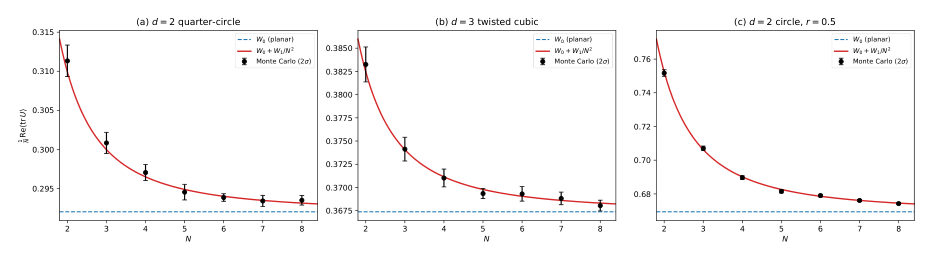
<figcaption class="paper-figure-caption"><b>Fig 1.</b> Figure 1: Genus-1 correction to the finite-N Wilson line (2σ error bars). Monte Carlo values (points); W0 +W1/N2 (solid) and the planar value W0 (dashed), for (a) the d = 2 quarter-circle (s = 1.0, W1 = +0.0716), (b) the d = 3 twisted cubic (a = 0.75, W1 = +0.0602) and (c) the d = 2 Wilson loop (r = 0.5, W1 = +0.3320).</figcaption>
</figure>
</div>

<p><strong>Summary.</strong> This work develops a sophisticated mathematical machinery using a non-commutative Laplace transform to relate path space observables (quantum path signatures) to algebraic equations from random matrix theory. It successfully derives the full genus expansion of these loop equations, providing deep structural insights into quantum field theories governed by such spectral relations.</p>
<p><strong>Why it may be interesting.</strong> While highly abstract, the techniques developed—relating geometric/path integrals (signatures) to formal power series and spectral curves—are powerful tools for analyzing quantum field theories in dimensions where standard methods fail.</p>
<details>
<summary>Detailed structure</summary>
<p><strong>Main problem.</strong> The paper establishes a rigorous mathematical framework connecting path space analysis (quantum path signatures) to algebraic structures derived from random matrix theory via a non-commutative Laplace transform.</p>
<p><strong>Main result.</strong> They successfully derive the genus-$g$ loop equations for the quantum path signature, confirming consistency across multiple computational methods up to genus one and providing a systematic expansion in $1/N$.</p>
<p><strong>Method.</strong> The core method involves introducing and utilizing a non-commutative Laplace transform that maps convolution products on path space functionals (signatures) to algebraic products of formal power series.</p>
<p><strong>Model / system.</strong> The analysis centers on the quantum path signature, derived from random unitary matrix-valued paths $U(\gamma)$, which is related to Wilson loops in gauge theory and planar limits of matrix models.</p>
<p><strong>Key observables.</strong> Quantum Path Signature ($S$), Planar Wilson Line Observable ($W$), Genus-$g$ corrections ($W_g$), and the non-commutative resolvent ($R_\mu$).</p>
<p><strong>Important parameters / regimes.</strong> The large-$N$ limit (planar limit), genus $g$, and path geometry $\gamma(t)$ are key parameters.</p>
<p><strong>Assumptions / limitations.</strong> The analysis assumes factorial decay of the signature moments for the existence of the planar limit, and it notes that the full solution theory for interacting models remains open due to non-closure.</p>
<p><strong>Figures summary.</strong> Not specified in detail, but the structure implies showing recursive relations (e.g., Eq. 66) and comparing results from different computational approaches (discretized loops vs. combinatorial forms).</p>
<p><strong>Paper structure.</strong> The paper progresses by first defining the non-commutative Laplace transform to map path convolution to algebraic products; it then applies this to derive the planar loop equation; subsequently, it extends this framework to systematically calculate genus-$g$ corrections ($W_g$) via integral equations.</p>
</details>
<details>
<summary>Abstract</summary>
<p>We introduce a non-commutative Laplace transform between functionals on path space and formal series in a tensor algebra, under which a natural convolution of path functionals becomes an algebraic product of series. Applying it to a random unitary matrix-valued path development - the quantum path signature - we show that the governing planar loop equations take a non-commutative spectral form. We then extend the loop equations to a $1/N$ genus expansion, organised by topological recursion, and obtain a hierarchy of integral equations on path space for the corrections.</p>
</details>
<p><sub><a href="#top">↑ back to top</a></sub></p>
<h2 id="other-papers-9">Other papers (9)</h2>
<p><em>Papers from primary archives without highlighted authors or any topic match. Click to expand.</em></p>
<details>
<summary>Show other papers</summary>

<p><a id="paper-2608.03825"></a></p>
<h3 id="cnot-distance-is-np-complete-under-all-to-all-connectivity"><a href="http://arxiv.org/abs/2608.03825v1">CNOT-Distance is NP-complete under all-to-all connectivity</a></h3>
<p><strong>Authors:</strong> Antonio Acuaviva, Arturo Acuaviva, Pablo Acuaviva<br>
<strong>Type:</strong> theory · <strong>Category:</strong> quantum information and computing · <strong>PDF:</strong> <a href="https://arxiv.org/pdf/2608.03825v1">https://arxiv.org/pdf/2608.03825v1</a><br>
<strong>Analysis basis:</strong> full PDF text, analyzed in chunks</p>
<div class="figure-strip-hint">↔ Scroll figures horizontally</div>
<div class="paper-figures-scroll">
<figure class="paper-figure-card">
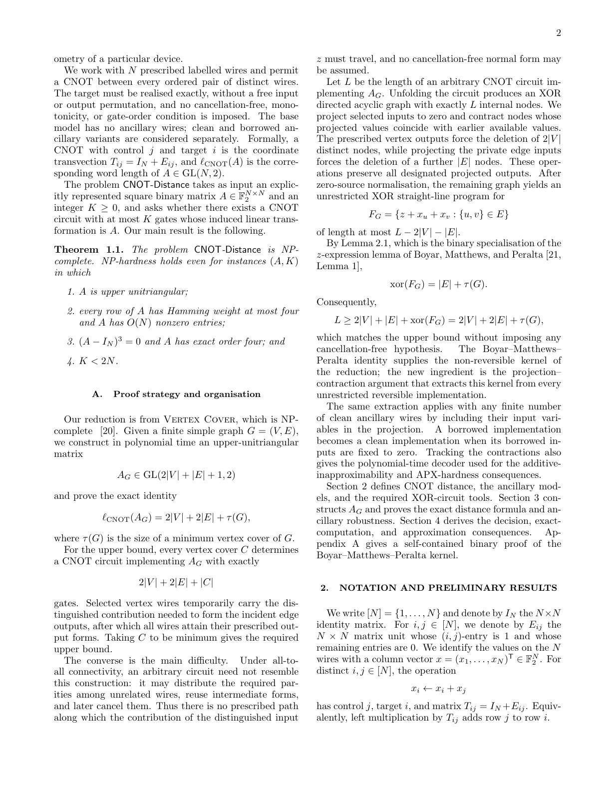
<figcaption class="paper-figure-caption"><b>Fig 1.</b> Low-resolution page preview, page 2</figcaption>
</figure>
<figure class="paper-figure-card">
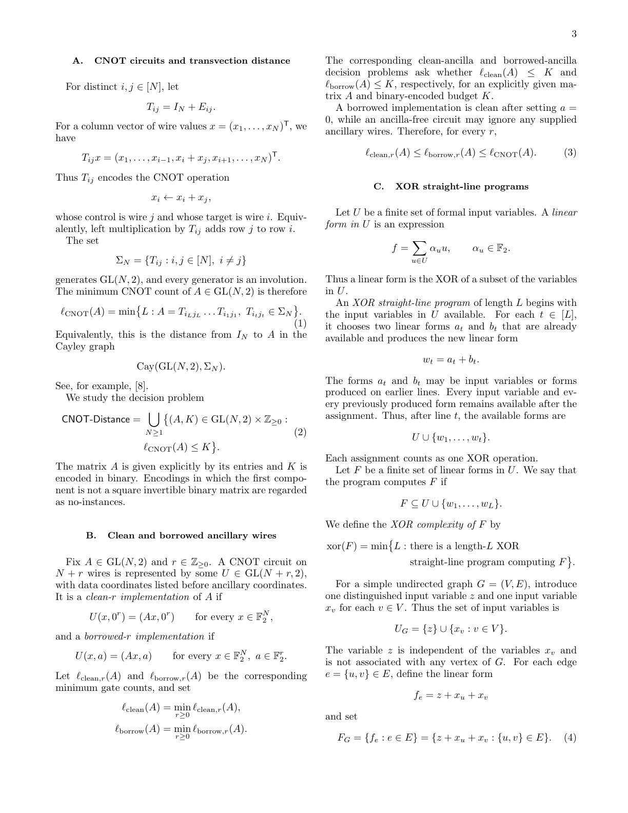
<figcaption class="paper-figure-caption"><b>Fig 2.</b> Low-resolution page preview, page 3</figcaption>
</figure>
<figure class="paper-figure-card">
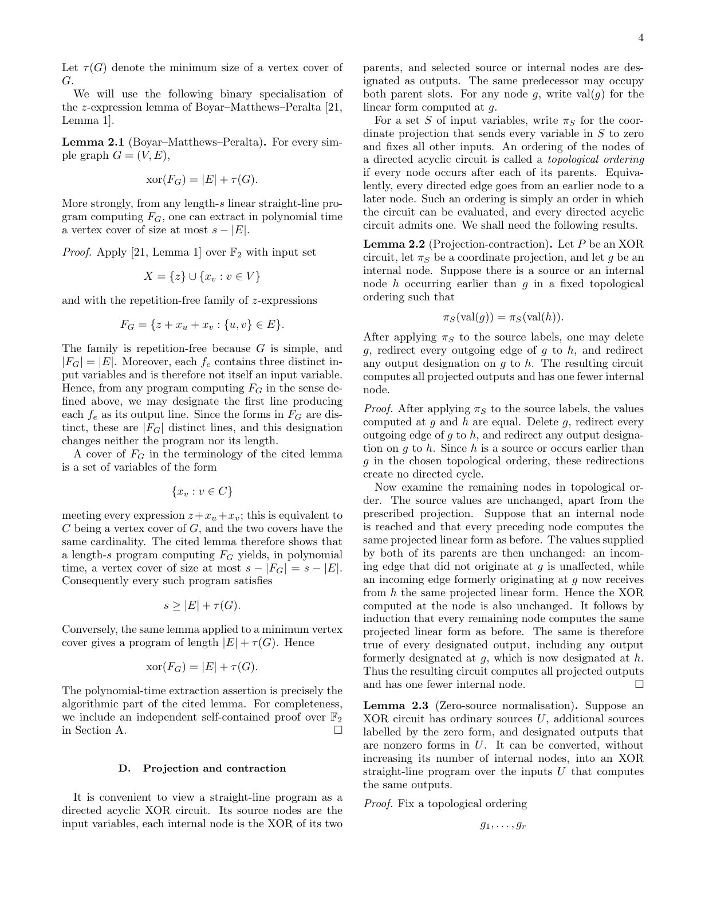
<figcaption class="paper-figure-caption"><b>Fig 3.</b> Low-resolution page preview, page 4</figcaption>
</figure>
<figure class="paper-figure-card">
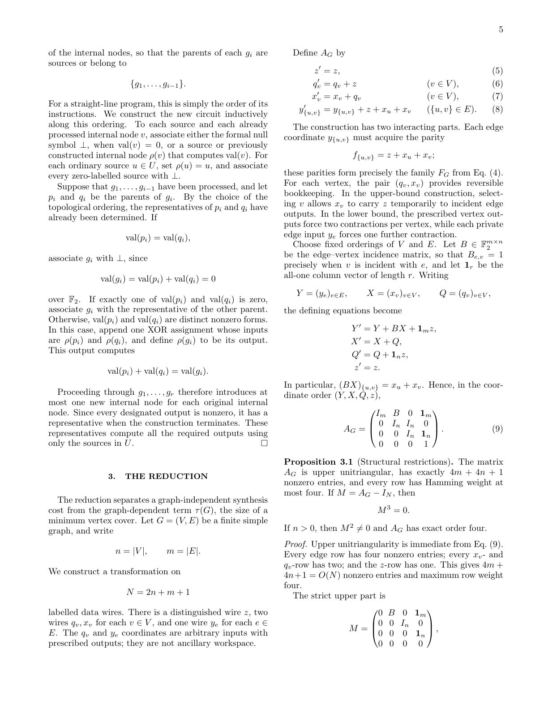
<figcaption class="paper-figure-caption"><b>Fig 4.</b> Low-resolution page preview, page 5</figcaption>
</figure>
<figure class="paper-figure-card">
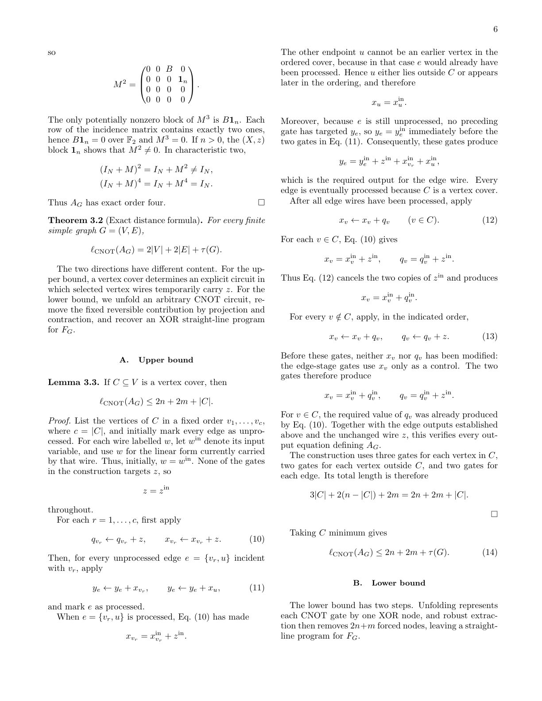
<figcaption class="paper-figure-caption"><b>Fig 5.</b> Low-resolution page preview, page 6</figcaption>
</figure>
</div>
<p><strong>Summary.</strong> This paper proves that calculating the minimum number of CNOT gates required to implement a given linear transformation (CNOT-Distance) is an NP-complete problem. The authors achieve this by constructing specific matrices whose gate count exactly matches the size of the minimum vertex cover of a graph. This result establishes a strong theoretical lower bound on the complexity of quantum circuit synthesis.</p>
<p><strong>Why it may be interesting.</strong> This work provides fundamental computational hardness results for quantum circuit synthesis, which is crucial for understanding the limits of implementing desired unitary operations using physical hardware constraints.</p>
<details>
<summary>Detailed structure</summary>
<p><strong>Main problem.</strong> The problem addressed is determining if a given invertible linear transformation $A \in GL(N, 2)$ can be implemented using at most $K$ CNOT gates ($   ext{CNOT-Distance}$).</p>
<p><strong>Main result.</strong> The authors prove that the $   ext{CNOT-Distance}$ problem is NP-complete under all-to-all connectivity.</p>
<p><strong>Method.</strong> The proof relies on a reduction from Minimum Vertex Cover (an NP-complete problem) and involves analyzing the structure of CNOT circuits by mapping them to XOR directed acyclic graphs.</p>
<p><strong>Model / system.</strong> The model is quantum circuit synthesis using only CNOT gates acting on fixed labeled wires, represented mathematically by linear transformations over $\mathbb{F}_2$.</p>
<p><strong>Key observables.</strong> $\ell_{	ext{CNOT}}(A)$ (minimum gate count), $    au(G)$ (minimum vertex cover size).</p>
<p><strong>Important parameters / regimes.</strong> $N$ (number of wires/qubits), $K$ (gate budget).</p>
<p><strong>Assumptions / limitations.</strong> The analysis assumes all-to-all connectivity between any pair of distinct wires.</p>
<p><strong>Paper structure.</strong> The paper establishes the NP-completeness by constructing a specific matrix $A_G$ derived from an arbitrary graph $G$, showing that $\ell_{	ext{CNOT}}(A_G)$ exactly encodes the minimum vertex cover size, thus linking circuit complexity to graph theory.</p>
</details>
<details>
<summary>Abstract</summary>
<p>Given $A\in\operatorname{GL}(N,2)$ and an integer $K$, we ask whether $A$ can be implemented by at most $K$ CNOT gates on fixed labelled wires with all-to-all connectivity. We prove that this problem is NP-complete. From a finite simple graph $G=(V,E)$, we construct an upper-unitriangular matrix $A_G\in\operatorname{GL}(2|V|+|E|+1,2)$ satisfying $\ell_{\mathrm{CNOT}}(A_G)=2|V|+2|E|+τ(G)$, where $τ(G)$ is the minimum vertex-cover size. Each target matrix has $O(N)$ nonzero entries and row Hamming weight at most four. The lower bound unfolds an arbitrary CNOT circuit into an XOR directed acyclic graph and applies projection--contraction operations, allowing cancellation and unrestricted reuse of intermediate parities. For this family, the optimum is unchanged by any finite number of clean or borrowed ancillary wires that must be restored. A polynomial-time decoder further yields NP-hardness of approximation within every fixed additive constant and, through an L-reduction from Minimum Vertex Cover on cubic graphs, APX-hardness of the associated CNOT-circuit optimisation problem.</p>
</details>
<p><sub><a href="#top">↑ back to top</a></sub></p>

<p><a id="paper-2608.03188"></a></p>
<h3 id="factorization-of-exclusive-sum-of-products-expressions-with-rectangle-covering-to-reduce-quantum-circuit-cost"><a href="http://arxiv.org/abs/2608.03188v1">Factorization of Exclusive-Sum-Of-Products Expressions with Rectangle Covering to Reduce Quantum Circuit Cost</a></h3>
<p><strong>Authors:</strong> Audrey Hou, Lucia Zhang, Ali Al-Bayaty, Marek Perkowski<br>
<strong>Type:</strong> theory · <strong>Category:</strong> quantum information and computing · <strong>PDF:</strong> <a href="https://arxiv.org/pdf/2608.03188v1">https://arxiv.org/pdf/2608.03188v1</a><br>
<strong>Analysis basis:</strong> full PDF text, analyzed in chunks</p>
<div class="figure-strip-hint">↔ Scroll figures horizontally</div>
<div class="paper-figures-scroll">
<figure class="paper-figure-card">
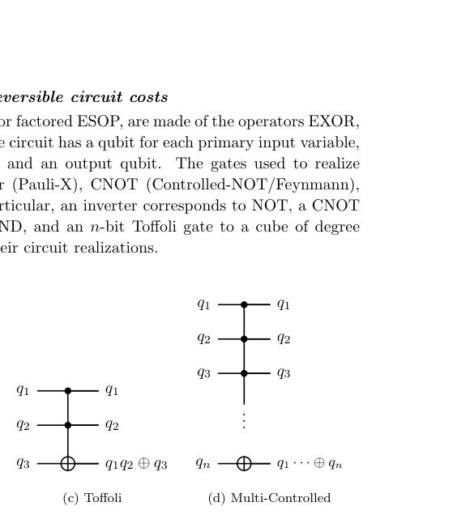
<figcaption class="paper-figure-caption"><b>Fig 1.</b> Fig. 1. Permutative Quantum Gates</figcaption>
</figure>
<figure class="paper-figure-card">
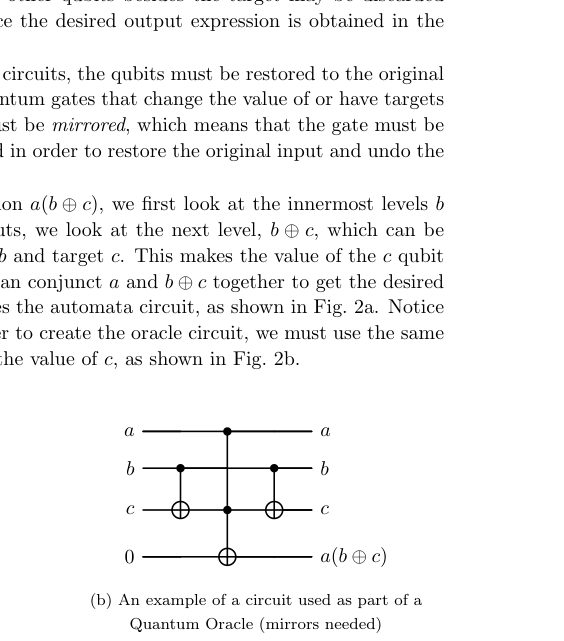
<figcaption class="paper-figure-caption"><b>Fig 2.</b> Fig. 2. Realization of a(b ⊕c) in Automata vs Oracle circuit</figcaption>
</figure>
<figure class="paper-figure-card">
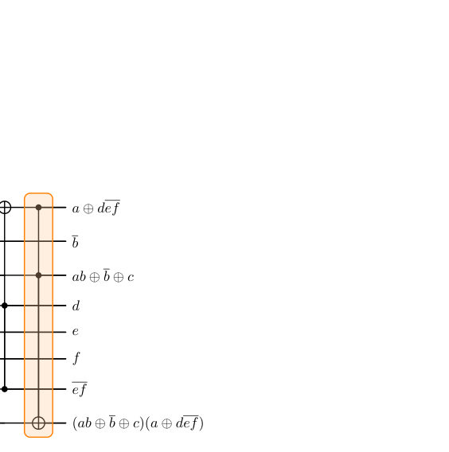
<figcaption class="paper-figure-caption"><b>Fig 3.</b> Fig. 4. Automata of After factoring</figcaption>
</figure>
<figure class="paper-figure-card">
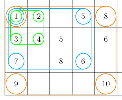
<figcaption class="paper-figure-caption"><b>Fig 4.</b> Fig. 8. Odd Rectangle Covering vs. Disjoint Covering on the same matrix</figcaption>
</figure>
<figure class="paper-figure-card">
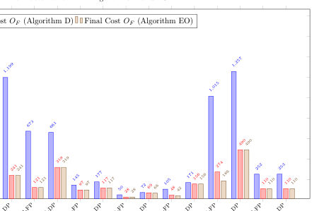
<figcaption class="paper-figure-caption"><b>Fig 5.</b> Fig. 10. Costs Before and After Factorization</figcaption>
</figure>
</div>
<p><strong>Summary.</strong> This paper presents novel algorithms that factor complex logic expressions (ESOP) by mapping them onto 2D matrices and using rectangle covering techniques. This factorization allows for the creation of equivalent, but significantly simpler, quantum circuits. The resulting cost reductions in both classical gate counts and quantum circuit metrics are substantial, making it a key tool for optimizing quantum computation resource estimates.</p>
<p><strong>Why it may be interesting.</strong> While focused on circuit minimization rather than physical Hamiltonian simulation, the techniques developed for efficient logical decomposition and resource estimation are fundamental to designing scalable quantum algorithms.</p>
<details>
<summary>Detailed structure</summary>
<p><strong>Main problem.</strong> The primary goal is optimizing quantum circuit costs associated with implementing complex logic functions represented as Exclusive-Sum-Of-Products (ESOP) expressions.</p>
<p><strong>Main result.</strong> The proposed factorization algorithms significantly reduce both the classical literal count and the quantum Maslov cost of realizing these circuits, achieving reductions between 20% and 95%.</p>
<p><strong>Method.</strong> The method involves representing the ESOP expression as a 2D matrix and applying specialized 'Rectangle Covering methods' (Disjoint and Even-Odd) to find an equivalent, factored form.</p>
<p><strong>Model / system.</strong> The model is abstract quantum circuit realization for AND/EXOR logic gates. Costs are measured using the Maslov cost for both quantum oracle and automaton circuits, which are built upon generalized n-bit Toffoli gates.</p>
<p><strong>Key observables.</strong> Literal count (L(E)), Maslov cost for quantum automata (A(E)), and Maslov cost for quantum oracles (O(E)).</p>
<p><strong>Important parameters / regimes.</strong> The complexity of the ESOP expression, which must be FPRM with cube degrees at most 2 for direct matrix representation.</p>
<p><strong>Assumptions / limitations.</strong> For quantum oracle circuits, intermediate variables in factored forms require 'restoring' via mirroring gates to maintain equivalence with the original circuit structure.</p>
<p><strong>Figures summary.</strong> Figures illustrate gate realizations (CNOT, Toffoli), comparisons of costs before and after factorization using matrix representations, and demonstrations of the disjoint rectangle covering process on these matrices.</p>
<p><strong>Paper structure.</strong> The paper introduces the problem of ESOP cost optimization, details the matrix representation and the two rectangle covering algorithms (Disjoint and Even-Odd), presents comparative results across multiple benchmarks for literal count, automata cost, and oracle cost, and concludes with an analysis comparing algorithmic efficiency.</p>
</details>
<details>
<summary>Abstract</summary>
<p>The implementation of quantum circuits is currently very expensive, especially due to the usage of large Toffoli gates. Therefore, it is critical to optimize circuit costs by factoring expressions as they become more complex. In the proposed algorithms to factor ESOP expressions, each product term is converted into a cell in a 2D matrix, and optimal factored AND/EXOR solutions are determined using Disjoint and Even-Odd Rectangle covering methods. Two Python programs implementing these algorithms were tested and evaluated using well-known benchmarks. The results showed that both the literal counts used in classical logic circuits as well as the Maslov cost used in quantum circuits was reduced by 20%-95% depending on expression size.</p>
</details>
<p><sub><a href="#top">↑ back to top</a></sub></p>

<p><a id="paper-2608.03315"></a></p>
<h3 id="harvest-resource-aware-quantum-compilation-for-magic-state-protocols"><a href="http://arxiv.org/abs/2608.03315v1">Harvest: Resource-Aware Quantum Compilation for Magic State Protocols</a></h3>
<p><strong>Authors:</strong> Jannik Pflieger, Aleksandra Świerkowska, Emmanouil Giortamis, Pramod Bhatotia<br>
<strong>Type:</strong> theory · <strong>Category:</strong> quantum information and computing · <strong>PDF:</strong> <a href="https://arxiv.org/pdf/2608.03315v1">https://arxiv.org/pdf/2608.03315v1</a><br>
<strong>Analysis basis:</strong> full PDF text, analyzed in chunks</p>
<div class="figure-strip-hint">↔ Scroll figures horizontally</div>
<div class="paper-figures-scroll">
<figure class="paper-figure-card">
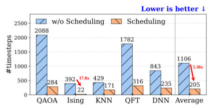
<figcaption class="paper-figure-caption"><b>Fig 1.</b> Fig. 1: Number of timesteps with and without magic state scheduling. Scheduling lowers the execution time by an average 5.38× (up to 17.8×).</figcaption>
</figure>
<figure class="paper-figure-card">
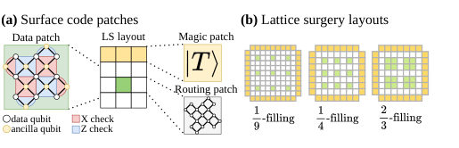
<figcaption class="paper-figure-caption"><b>Fig 2.</b> Fig. 2: Patch-level execution model (§II-A). (a) A physical surface-code patch is abstracted into a data, routing, or magic-state patch on a lattice-surgery layout. (b) Layout templates with different data-patch fillings.</figcaption>
</figure>
<figure class="paper-figure-card">
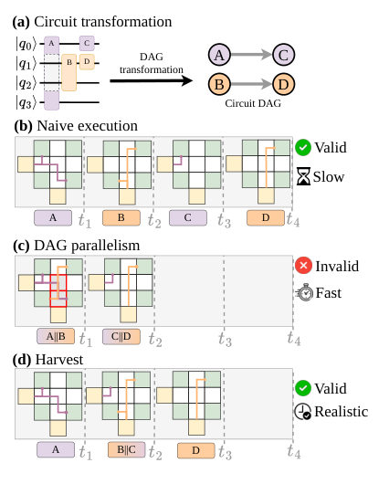
<figcaption class="paper-figure-caption"><b>Fig 3.</b> Fig. 3: Resource-aware compilation motivation (§II-D). (a) Circuit-to-DAG transformation. (b) Naive serial execution. (c) DAG-only scheduling. (d) Resource-aware scheduling.</figcaption>
</figure>
<figure class="paper-figure-card">
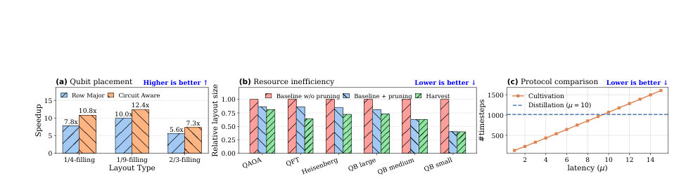
<figcaption class="paper-figure-caption"><b>Fig 4.</b> Fig. 4: Three effects motivating resource-aware lattice-surgery compilation (§III). (a) Circuit-aware vs. row-major placement. (b) Patches removed by post-scheduling pruning. (c) Distillation vs. cultivation latency/throughput trade-offs.</figcaption>
</figure>
<figure class="paper-figure-card">
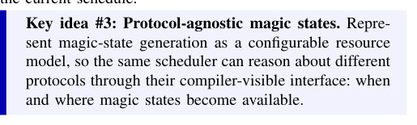
<figcaption class="paper-figure-caption"><b>Fig 5.</b> Fig. 5 shows Harvest’s position in the compilation stack: four components built around a shared intermediate represen- tation, H-IR. Input and output. Harvest’s own decisions should stay de- coupled from hardware-specific lowering: it takes a quantum circuit as input and produces H-IR, a routed patch-level IR, as output. Harvest IR (H-IR). Because all four components must reason over the same dependencies, layout, and schedule, H-IR serves as their shared representation. Circuit transformer. Since the rest of the pipeline needs the circuit’s dependencies and lattice-surgery structure exposed up front, the circuit transformer produces three representations of the input program: a Clifford+T...</figcaption>
</figure>
</div>
<p><strong>Summary.</strong> This paper introduces Harvest, a novel compiler designed for fault-tolerant quantum computation utilizing lattice surgery. It solves the critical problem where scheduling, placement, and magic-state resource management cannot be optimized in isolation due to shared physical constraints. By co-optimizing these factors, Harvest achieves substantial speedups and dramatically improves hardware resource utilization.</p>
<p><strong>Why it may be interesting.</strong> While focused on compilation rather than fundamental physics, the resource management challenges—optimizing spatial layout alongside temporal execution constraints—are highly relevant to designing physical implementations of quantum circuits using superconducting or trapped-ion architectures.</p>
<details>
<summary>Detailed structure</summary>
<p><strong>Main problem.</strong> The core problem is developing a quantum compiler that can co-optimize placement, routing, scheduling, and magic-state supply for lattice-surgery operations in fault-tolerant quantum computation.</p>
<p><strong>Main result.</strong> Harvest achieves significant performance gains on benchmarks, showing an average speedup of 4.83x (up to 17.8x) over sequential execution while reclaiming substantial unused physical resources.</p>
<p><strong>Method.</strong> The authors propose HARVEST, a resource-aware compilation approach that uses a patch-level intermediate representation (H-IR) to jointly optimize scheduling with circuit-aware placement and congestion-aware routing.</p>
<p><strong>Model / system.</strong> The system modeled is a fault-tolerant quantum processor using topological codes, where operations are executed via 'lattice surgery' on a 2D grid of physical patches that can hold data, magic states, or act as routes.</p>
<p><strong>Key observables.</strong> Average speedup (e.g., 4.83x), schedule length improvement (up to 1.35x), and the percentage of reclaimed unused resources (e.g., up to 72.0% magic-state patches).</p>
<p><strong>Important parameters / regimes.</strong> The optimization must jointly consider data dependencies, physical resource conflicts (ports/routes), and consumable non-Clifford resources (magic states).</p>
<p><strong>Assumptions / limitations.</strong> Independent optimization of placement, routing, scheduling, or magic-state supply is insufficient because operations contend for shared physical resources like ports and routes.</p>
<p><strong>Figures summary.</strong> Figures illustrate the patch-level execution model showing data, routing, and magic-state patches; comparisons show speedup gains over naive serial execution by integrating resource awareness into scheduling.</p>
<p><strong>Paper structure.</strong> The paper introduces the limitations of existing compilers, proposes the HARVEST framework with its H-IR, details the co-optimization pipeline (placement $
ightarrow$ scheduling $
ightarrow$ pruning), and validates it against standard quantum benchmark suites.</p>
</details>
<details>
<summary>Abstract</summary>
<p>Fault-tolerant quantum processors based on topological codes execute programs through lattice surgery, where operations must be mapped, routed, and supplied with magic states across a 2D grid of physical patches. Non-Clifford operations require these magic states, produced either by distillation factories or by cultivation, each trading footprint against preparation latency, and delivering a magic state to the data patches that consume it requires routing through the same shared layout as every other operation. Yet placement, routing, scheduling, and magic-state supply cannot be optimized in isolation: two operations with no circuit-level dependency can still contend for the same ports, routes, or magic-state terminals once placed, so a compiler that decouples instruction scheduling from magic-state generation, or hard-codes a single generation protocol, is forced to trade execution time against layout footprint instead of co-optimizing both across protocols.   We present Harvest, a resource-aware compilation approach for lattice-surgery that co-optimizes magic-state consumption with circuit-aware placement and congestion-aware routing under a protocol-agnostic resource model, then reclaims unused layout footprint after scheduling. Across standard benchmark suites (QAOA, QFT, QASMBench), Harvest achieves an average speedup of $4.83\times$ (up to $17.8\times$) over sequential execution, improves schedule length by up to $1.35\times$ through circuit-aware placement, and reclaims up to $72.0\%$ of unused magic-state patches and $33.9\%$ of unused routing patches.</p>
</details>
<p><sub><a href="#top">↑ back to top</a></sub></p>

<p><a id="paper-2608.02826"></a></p>
<h3 id="improved-quantum-algorithms-for-reinforcement-learning-under-a-generative-model"><a href="http://arxiv.org/abs/2608.02826v1">Improved Quantum Algorithms for Reinforcement Learning Under a Generative Model</a></h3>
<p><strong>Authors:</strong> Joao F. Doriguello<br>
<strong>Type:</strong> theory · <strong>Category:</strong> quantum information and computing · <strong>PDF:</strong> <a href="https://arxiv.org/pdf/2608.02826v1">https://arxiv.org/pdf/2608.02826v1</a><br>
<strong>Analysis basis:</strong> full PDF text, analyzed in chunks</p>
<div class="figure-strip-hint">↔ Scroll figures horizontally</div>
<div class="paper-figures-scroll">
<figure class="paper-figure-card">
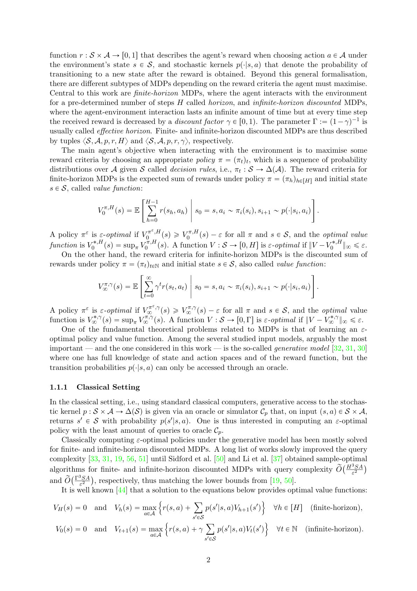
<figcaption class="paper-figure-caption"><b>Fig 1.</b> Low-resolution page preview, page 2</figcaption>
</figure>
<figure class="paper-figure-card">
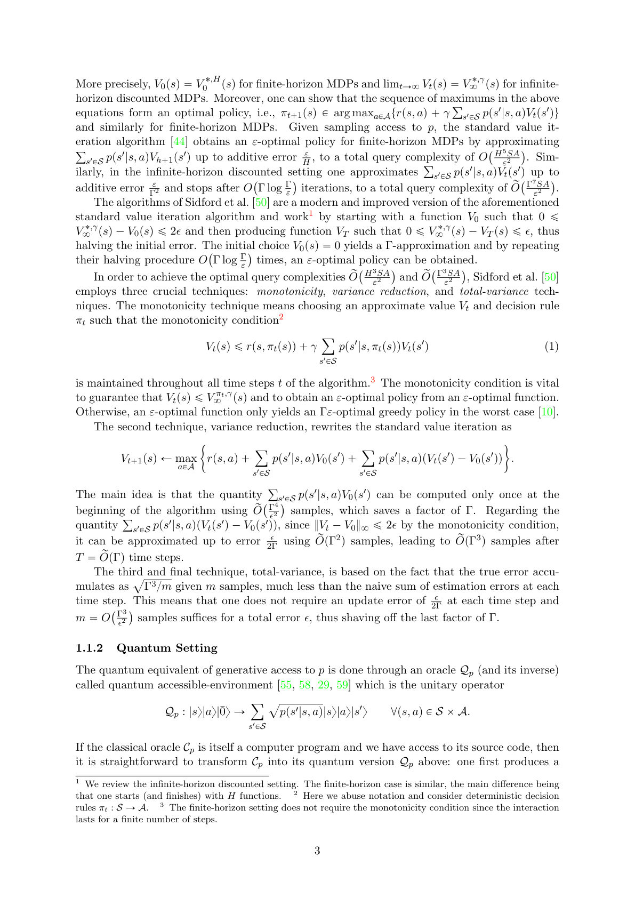
<figcaption class="paper-figure-caption"><b>Fig 2.</b> Low-resolution page preview, page 3</figcaption>
</figure>
<figure class="paper-figure-card">
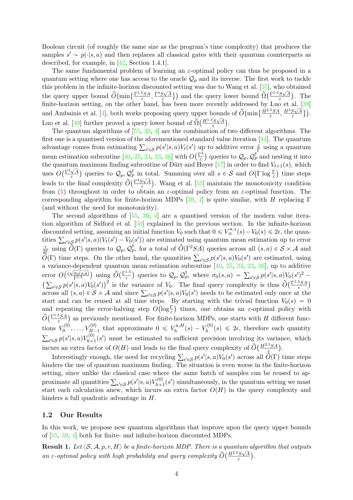
<figcaption class="paper-figure-caption"><b>Fig 3.</b> Low-resolution page preview, page 4</figcaption>
</figure>
<figure class="paper-figure-card">
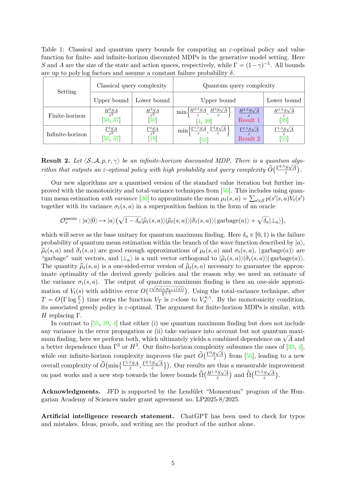
<figcaption class="paper-figure-caption"><b>Fig 4.</b> Low-resolution page preview, page 5</figcaption>
</figure>
<figure class="paper-figure-card">
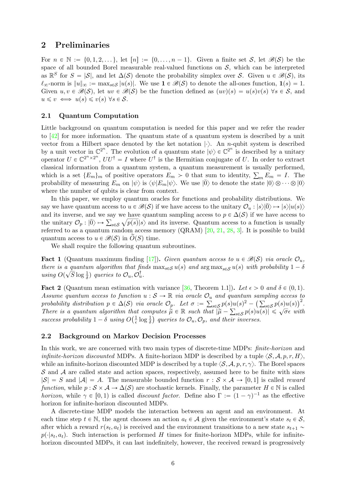
<figcaption class="paper-figure-caption"><b>Fig 5.</b> Low-resolution page preview, page 6</figcaption>
</figure>
</div>
<p><strong>Summary.</strong> This paper introduces improved quantum algorithms designed to solve for optimal policies in Reinforcement Learning within Markov Decision Processes. By combining quantum subroutines like quantum mean estimation and maximum finding, the authors significantly reduce the required query complexity compared to prior classical and quantum methods. This advances the theoretical understanding of quantum computation's role in solving complex sequential decision-making problems.</p>
<p><strong>Why it may be interesting.</strong> While the application is ML/AI, the core methodology relies entirely on developing and analyzing complex quantum algorithms (quantum mean estimation, amplitude amplification techniques) applied to optimization problems, making it highly relevant to quantum computation theory.</p>
<details>
<summary>Detailed structure</summary>
<p><strong>Main problem.</strong> The core problem is developing quantum algorithms to compute approximate optimal policies for Reinforcement Learning (RL) in Markov Decision Processes (MDPs). This aims to overcome the computational challenges posed by large state/action spaces.</p>
<p><strong>Main result.</strong> The authors propose new quantum algorithms that improve query complexities compared to previous works, achieving bounds approaching established quantum lower limits for both finite- and infinite-horizon MDPs.</p>
<p><strong>Method.</strong> The approach combines standard value iteration techniques with advanced quantum subroutines, specifically quantum mean estimation and quantum maximum finding. These are integrated using total-variance reduction techniques.</p>
<p><strong>Model / system.</strong> The model is a discrete-time Markov Decision Process (MDP), studied in finite-horizon or infinite-horizon discounted settings. The process relies on estimating optimal policies ($\pi^*$) and value functions ($V^*$).</p>
<p><strong>Key observables.</strong> Query complexity, $\epsilon$-optimality for policies and value functions.</p>
<p><strong>Important parameters / regimes.</strong> State space size (S), action space size (A), finite horizon length (H), discount factor ($\gamma$), and the desired error tolerance ($\epsilon$).</p>
<p><strong>Assumptions / limitations.</strong> The analysis assumes access to transition probabilities via an oracle, which is quantum accessible-environment ($Q_p$) in the quantum setting.</p>
<p><strong>Figures summary.</strong> Not specified by notes; references suggest comparison of classical vs. quantum query bounds in a table format.</p>
<p><strong>Paper structure.</strong> The paper builds upon foundational work in MDPs and RL theory, proposing novel quantum algorithms that combine quantum mean estimation and maximum finding to improve sample complexity bounds for solving optimal policies.</p>
</details>
<details>
<summary>Abstract</summary>
<p>Reinforcement learning is a subfield of machine learning that studies how an agent interacts with an environment in order to extract as large a reward as possible. A standard approach to study such interaction is through Markov Decision Processes (MDPs) and the task of choosing an optimal policy --- a function that tells the agent which action to take. In this work, we study two types of MDPs --- finite-horizon and infinite-horizon discounted --- and propose new quantum algorithms for computing approximate optimal policies. Our quantum algorithms are based on a new combination of standard value iteration and quantum subroutines like quantum mean estimation and quantum maximum finding, overall enhanced with techniques from sample-optimal classical algorithms. Our resulting query complexities improve upon previous works, thus approaching already established quantum lower bounds.</p>
</details>
<p><sub><a href="#top">↑ back to top</a></sub></p>

<p><a id="paper-2608.03656"></a></p>
<h3 id="iterative-linear-quadratic-regulator-on-sun-for-multi-qubit-gate-synthesis"><a href="http://arxiv.org/abs/2608.03656v1">Iterative linear quadratic regulator on SU(N) for multi-qubit gate synthesis</a></h3>
<p><strong>Authors:</strong> Dirk Heimann, Felix Wiebe, Elie Mounzer, Shivesh Kumar<br>
<strong>Type:</strong> theory · <strong>Category:</strong> quantum information and computing · <strong>PDF:</strong> <a href="https://arxiv.org/pdf/2608.03656v1">https://arxiv.org/pdf/2608.03656v1</a><br>
<strong>Analysis basis:</strong> full PDF text, analyzed in chunks</p>
<div class="figure-strip-hint">↔ Scroll figures horizontally</div>
<div class="paper-figures-scroll">
<figure class="paper-figure-card">
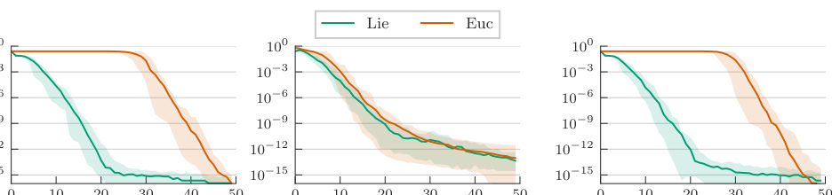
<figcaption class="paper-figure-caption"><b>Fig 1.</b> FIG. 2: The median of 25 runs is plotted with upper and lower whiskers at each iteration step for three-qubit gates.</figcaption>
</figure>
<figure class="paper-figure-card">
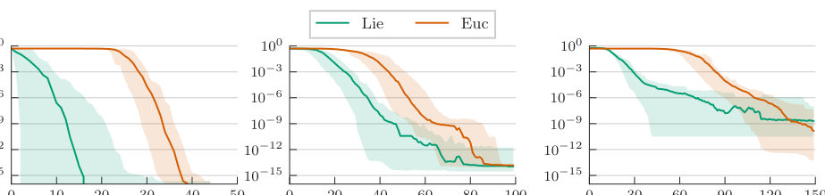
<figcaption class="paper-figure-caption"><b>Fig 2.</b> FIG. 3: The median of 25 runs is plotted with upper and lower whiskers at each iteration step for weighted parity X and Z three-, four-, and five-qubit gates.</figcaption>
</figure>
<figure class="paper-figure-card">
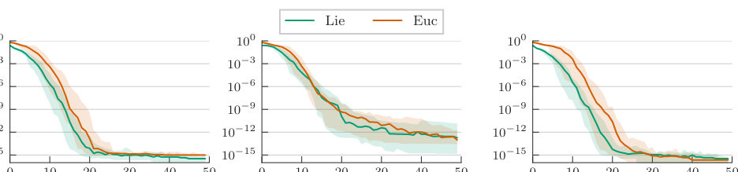
<figcaption class="paper-figure-caption"><b>Fig 3.</b> FIG. 5: The median of 25 runs is plotted with upper and lower whiskers at each iteration step for three-qubit gates with area under the curve Bayesian optimization cost function.</figcaption>
</figure>
<figure class="paper-figure-card">
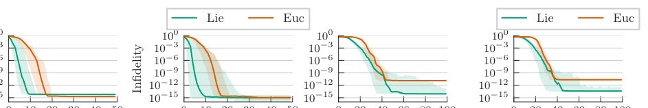
<figcaption class="paper-figure-caption"><b>Fig 4.</b> FIG. 6: The median of 25 runs is plotted with upper and lower whiskers at each iteration step for parity X and Z three- and four-qubit gates with the area under the curve Bayesian optimization cost function.</figcaption>
</figure>
<figure class="paper-figure-card">
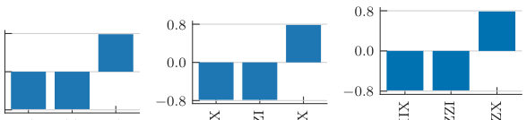
<figcaption class="paper-figure-caption"><b>Fig 5.</b> FIG. 7: Solutions found with on iteration step with 1 −F &lt; 10−15 while allowing the full algebra basis as drive terms.</figcaption>
</figure>
</div>
<p><strong>Summary.</strong> This paper develops and applies an adaptation of the Iterative Linear Quadratic Regulator (iLQR) tailored specifically to the Lie-group structure of SU(N). By incorporating this geometric constraint into the optimization process, the authors demonstrate improved convergence speed for quantum gate synthesis compared to standard methods. The findings highlight the value of group theory in enhancing optimal control algorithms for multi-qubit systems.</p>
<p><strong>Why it may be interesting.</strong> This work provides a rigorous mathematical framework for optimizing quantum controls by respecting the underlying group structure (SU(N)), which is crucial for developing scalable, physically constrained gate synthesis protocols.</p>
<details>
<summary>Detailed structure</summary>
<p><strong>Main problem.</strong> The primary goal is designing complex multi-qubit quantum gates using Quantum Optimal Control (QOC) theory.</p>
<p><strong>Main result.</strong> Incorporating the Lie-group geometry into the iLQR formulation accelerates convergence compared to Euclidean methods in unconstrained settings, though it increases sensitivity to initialization under constraints.</p>
<p><strong>Method.</strong> The authors adapt the Iterative Linear Quadratic Regulator (iLQR) by formulating updates and cost functions directly on the Special Unitary group SU(N), comparing this Lie-group approach against standard Euclidean iLQR.</p>
<p><strong>Model / system.</strong> The system involves quantum dynamics evolving on the special unitary group SU(N), where control is achieved by applying time-dependent Hamiltonian terms (drive fields) to synthesize target gates.</p>
<p><strong>Key observables.</strong> Convergence speed, gate fidelity, and the resulting infidelities of synthesized gates.</p>
<p><strong>Important parameters / regimes.</strong> The comparison hinges on two regimes: an idealized unconstrained setting versus a constrained setting limited to 2-local Hamiltonian terms.</p>
<p><strong>Assumptions / limitations.</strong> The derivation relies heavily on Taylor expansions and linearizing the system dynamics around the current trajectory, which introduces approximations.</p>
<p><strong>Figures summary.</strong> Figures show infidelity results for various multi-qubit gates (e.g., three- and five-qubit gates) comparing performance across different optimization score functions and iteration steps.</p>
<p><strong>Paper structure.</strong> The paper builds mathematically by deriving necessary Taylor expansions on Lie groups, detailing the iLQR update equations for SU(N), and then presenting numerical results comparing the convergence of the Lie-group vs. Euclidean formulations under varying constraints.</p>
</details>
<details>
<summary>Abstract</summary>
<p>In quantum optimal control theory, gradient-based trajectory optimization techniques have proven versatile in designing multi-qubit quantum gates. Furthermore, incorporating the underlying Lie-group structure can accelerate the optimization process. In this work, we adapt the Lie-group formulation of the iterative linear quadratic regulator (iLQR) to the special unitary group SU(N) and apply it to quantum gate synthesis, systematically comparing it against the standard Euclidean iLQR formulation across multiple two- to five-qubit gates. We find that in the idealized, unconstrained setting, where all Lie-algebra basis elements are available as drive Hamiltonian terms, the Lie-group formulation converges faster than the Euclidean iLQR formulation. If drive terms are constrained to 2-local Hamiltonian terms, the Lie-group variant converges faster in early optimization iterations, but exhibits greater sensitivity to initialization and a stronger tendency towards local minima. These results demonstrate that incorporating Lie-group geometry into iLQR substantially improves convergence and highlight important next steps for improvements in constrained control settings.</p>
</details>
<p><sub><a href="#top">↑ back to top</a></sub></p>

<p><a id="paper-2608.03777"></a></p>
<h3 id="optimal-and-deterministic-quantum-search-on-the-simplex-of-complete-graphs"><a href="http://arxiv.org/abs/2608.03777v1">Optimal and Deterministic Quantum Search on the Simplex of Complete Graphs</a></h3>
<p><strong>Authors:</strong> Kiyoji Huang Fujiwara, Yujia Shi, Thomas G. Wong<br>
<strong>Type:</strong> theory · <strong>Category:</strong> quantum information and computing · <strong>PDF:</strong> <a href="https://arxiv.org/pdf/2608.03777v1">https://arxiv.org/pdf/2608.03777v1</a><br>
<strong>Analysis basis:</strong> full PDF text, analyzed in chunks</p>
<div class="figure-strip-hint">↔ Scroll figures horizontally</div>
<div class="paper-figures-scroll">
<figure class="paper-figure-card">
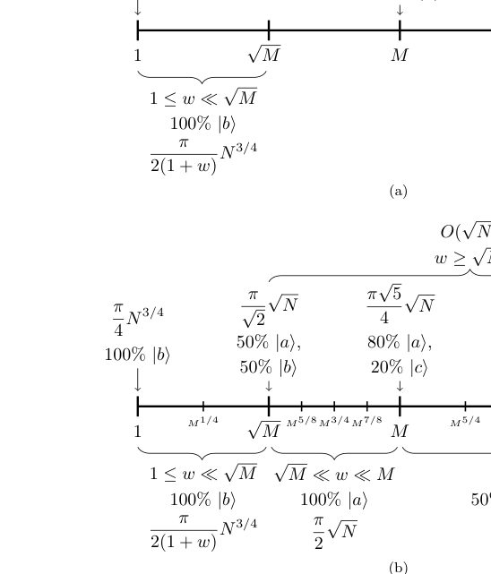
<figcaption class="paper-figure-caption"><b>Fig 1.</b> Fig. 2 Summary the first (or only) stage for search on the weighted simplex of complete graphs for large N. Subfigure (a) depicts only the prior results, and (b) includes the present results. The minor ticks in (b) are examples that are investigated in the paper.</figcaption>
</figure>
<figure class="paper-figure-card">
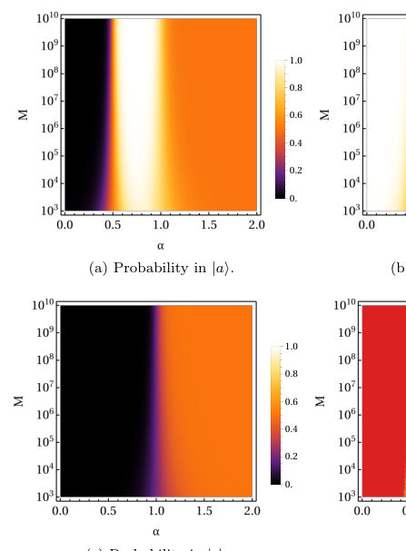
<figcaption class="paper-figure-caption"><b>Fig 2.</b> Fig. 3 For search on the simplex of complete graph with M(M + 1) vertices (ranging from M = 103 to 1010) and w = Mα (ranging from w = M0 to M2), the probability reached in (a) |a⟩, (b) |b⟩, and (c) |c⟩at the numerically-determined runtime using the numerically determined critical jumping rate. Subfigure (d) is the numerically-determined runtime divided by √</figcaption>
</figure>
<figure class="paper-figure-card">
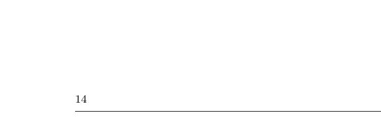
<figcaption class="paper-figure-caption"><b>Fig 3.</b> Fig. 5 For search on the simplex of com- plete graphs with w = M = 10 000 and γ = γw=M (7), the probability at the marked vertex |a⟩(solid black) and at vertex |c⟩ (dashed red).</figcaption>
</figure>
<figure class="paper-figure-card">
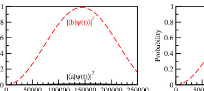
<figcaption class="paper-figure-caption"><b>Fig 4.</b> Fig. 9 For search on the simplex of complete graphs with M = 10 000 and w = M 1/4, the probability at the marked vertex |a⟩(solid black) and at vertex |b⟩(dashed red) with (a) γ = γw=M1/4 (14) and (b) γ = γW (13).</figcaption>
</figure>
<figure class="paper-figure-card">
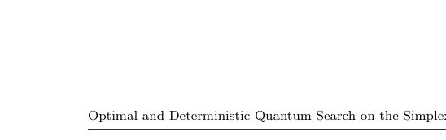
<figcaption class="paper-figure-caption"><b>Fig 5.</b> Fig. 11 For search on the simplex of com- plete graphs with M = 10 000, w = M 5/8, and γ = γw=M5/8 (15), the probability at the marked vertex |a⟩(solid black) and at vertex |b⟩(dashed red).</figcaption>
</figure>
</div>
<p><strong>Summary.</strong> This paper tackles the problem of achieving optimal and deterministic quantum search on the weighted simplex of complete graphs. The authors provide novel analytical proofs demonstrating that specific bridge weight conditions ($w=M$) guarantee both asymptotic optimality ($\mathcal{O}(\sqrt{N})$) and determinism for the quantum walk algorithm. It is significant because it rigorously characterizes the relationship between graph structure, edge weights, and search complexity.</p>
<p><strong>Why it may be interesting.</strong> This work provides rigorous theoretical bounds on quantum search complexity ($\mathcal{O}(\sqrt{N})$) for a complex network structure, offering deep insights into how local structural properties (like weights) dictate global algorithmic efficiency in quantum computation.</p>
<details>
<summary>Detailed structure</summary>
<p><strong>Main problem.</strong> The primary goal is to analytically prove optimal and deterministic quantum search algorithms for a specific graph structure: the simplex of complete graphs.</p>
<p><strong>Main result.</strong> The authors provide the first analytical proof that optimal quantum search occurs when the bridge weight equals $M$, and they establish conditions ($\sqrt{M} \leq w \leq M$) under which the search is both asymptotically optimal and deterministic.</p>
<p><strong>Method.</strong> The research combines analytical proofs using continuous-time quantum walk Hamiltonians with numerical demonstrations across various parameter regimes (bridge weights).</p>
<p><strong>Model / system.</strong> The system is modeled as a weighted simplex of complete graphs, containing $N = M(M+1)$ vertices. The search dynamics are governed by a time evolution operator derived from a specific Hamiltonian involving the adjacency matrix and bridge weights ($w$).</p>
<p><strong>Key observables.</strong> Search runtime (compared to $\sqrt{N}$), success probability, and the probability distribution across basis states $|a
angle$ (marked vertex) and neighboring vertices.</p>
<p><strong>Important parameters / regimes.</strong> The weight of the bridges ($w$) relative to $M$, specifically comparing regimes like $w=M$, $w=\sqrt{M}$, and $\sqrt{M} \ll w \ll M$.</p>
<p><strong>Assumptions / limitations.</strong> The analysis focuses on the single-marked vertex case, and it explicitly shows that graph connectivity measures (like algebraic connectivity) are unreliable indicators of fast search performance in this family.</p>
<p><strong>Figures summary.</strong> Figures summarize search results across different weights $w$, showing runtime vs. weight scaling; Figure 3 details probability overlaps and runtime for specific weight scalings ($w=M^\alpha$).</p>
<p><strong>Paper structure.</strong> The paper progresses by establishing the physical model, analyzing the quantum walk Hamiltonian in reduced subspaces using perturbation theory, deriving optimal rates for various weight regimes, and finally comparing search performance against graph connectivity metrics.</p>
</details>
<details>
<summary>Abstract</summary>
<p>The simplex of complete graphs, also known as the first-order truncated simplex lattice, is a network of $M+1$ identical complete graphs, each with $M$ vertices, such that each clique contains an edge or bridge to every other clique. It contains $N = M(M+1)$ vertices, and previous asymptotic results using a continuous-time quantum walk to search this graph for a single marked vertex have either numerically demonstrated an optimal runtime of $O(\sqrt{N})$, or analytically proved a deterministic success probability of 1, but not both, even when the bridges are weighted. In this paper, we give the first analytical proof of optimal quantum search on this graph, proving that it occurs when the weight of the bridges equals $M$. In addition, we numerically show that the optimal runtime is achieved more broadly whenever the weight is at least $\sqrt{M}$. Furthermore, the algorithm is also deterministic when the weight scales between $\sqrt{M}$ and $M$, and this is the first example of quantum search on the simplex of complete graphs that is both asymptotically optimal and deterministic. In addition, for weights where the algorithm is nondeterministic, we give a way to find the marked vertex by inspecting neighboring vertices. Finally, while it is known that connectivity is not a reliable indicator of fast quantum search when comparing different graph families, we show that it is also unreliable within the graph family of weighted simplex of complete graphs.</p>
</details>
<p><sub><a href="#top">↑ back to top</a></sub></p>

<p><a id="paper-2608.03029"></a></p>
<h3 id="physics-informed-quantum-machine-learning-with-hard-constraint-embedding-for-nonlinear-differential-equations-of-the-first-order"><a href="http://arxiv.org/abs/2608.03029v1">Physics-Informed Quantum Machine Learning with Hard Constraint Embedding for Nonlinear Differential Equations of the First Order</a></h3>
<p><strong>Authors:</strong> Mengke Xu, Xi Li, Xiao Chen, Xunan Wang, Wanli Huo, Long Ma, Weiqi Yan<br>
<strong>Type:</strong> theory · <strong>Category:</strong> numerical methods · <strong>PDF:</strong> <a href="https://arxiv.org/pdf/2608.03029v1">https://arxiv.org/pdf/2608.03029v1</a><br>
<strong>Analysis basis:</strong> full PDF text, analyzed in chunks</p>
<div class="figure-strip-hint">↔ Scroll figures horizontally</div>
<div class="paper-figures-scroll">
<figure class="paper-figure-card">
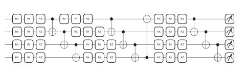
<figcaption class="paper-figure-caption"><b>Fig 1.</b> Figure 1: Quantum Ansatz with alternating entanglement pattern for 4 qubits and 3 layers.</figcaption>
</figure>
<figure class="paper-figure-card">
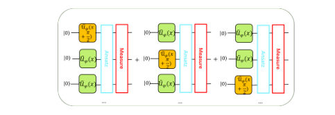
<figcaption class="paper-figure-caption"><b>Fig 2.</b> Figure 2: Derivative computation via parameter-shift rule.</figcaption>
</figure>
<figure class="paper-figure-card">
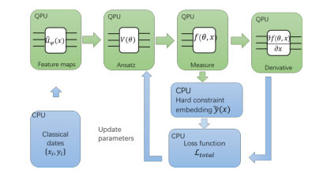
<figcaption class="paper-figure-caption"><b>Fig 3.</b> Figure 3: Flowchart of the proposed PIQML framework with hard constraint embedding.</figcaption>
</figure>
<figure class="paper-figure-card">
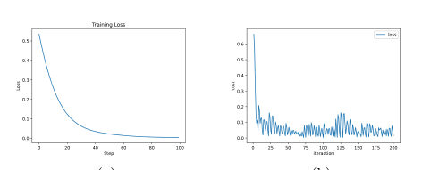
<figcaption class="paper-figure-caption"><b>Fig 4.</b> Figure 5: Comparison of the loss functions for a simple linear ODE. (a) Our PIQML model. (b) The existing quantum method from the literature [21].</figcaption>
</figure>
<figure class="paper-figure-card">
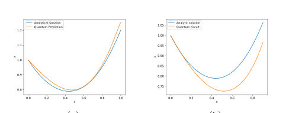
<figcaption class="paper-figure-caption"><b>Fig 5.</b> Figure 4: (a) Comparison of the PIQML model (orange line) against the analytical solution (blue line) for a simple linear ODE. (b) Performance of an existing quantum method from the literature (orange line) [21] in fitting the same ODE, showing inferior accuracy compared to the PIQML model.</figcaption>
</figure>
</div>
<p><strong>Summary.</strong> This paper introduces a Physics-Informed Quantum Machine Learning (PIQML) framework designed to solve nonlinear ODEs using near-term quantum hardware. It achieves this by embedding initial conditions as hard constraints and formulating the loss function around satisfying the differential equation residual itself. The method demonstrates high accuracy on complex dynamics, positioning it as a viable tool for quantum simulation in the NISQ era.</p>
<p><strong>Why it may be interesting.</strong> While focused on numerical methods, the reliance on quantum circuits for derivative calculation (parameter-shift rule) and the integration of physical laws into the training objective makes it relevant to developing quantum algorithms for simulating complex physical dynamics.</p>
<details>
<summary>Detailed structure</summary>
<p><strong>Main problem.</strong> The primary goal is solving nonlinear first-order ordinary differential equations (ODEs) using quantum machine learning techniques suitable for near-term quantum devices.</p>
<p><strong>Main result.</strong> The proposed PIQML framework successfully learns solutions to challenging ODEs, including highly oscillatory ones, showing close agreement with high-precision classical numerical benchmarks.</p>
<p><strong>Method.</strong> It employs a Physics-Informed Quantum Machine Learning (PIQML) framework that uses hard constraint embedding to analytically enforce initial conditions and focuses the loss function on satisfying the differential equation residual.</p>
<p><strong>Model / system.</strong> The model utilizes parameterized quantum circuits (PQCs) as variational ansatzes, encoding input variables via Fourier or Chebyshev feature maps. The solution is constructed by explicitly enforcing initial conditions through a function mapper.</p>
<p><strong>Key observables.</strong> Differential equation residual ($\mathcal{L}_{	ext{res}}$), reference data fitting loss ($\mathcal{L}_{	ext{data}}$), and the comparison of quantum-derived solutions against high-precision classical numerical benchmarks (e.g., RK45).</p>
<p><strong>Important parameters / regimes.</strong> The method is specifically designed for the NISQ era, utilizing techniques like the parameter-shift rule for gradient evaluation to avoid classical discretization.</p>
<p><strong>Assumptions / limitations.</strong> It assumes that quantum circuits can effectively approximate the required solution manifold and that hard constraint embedding overcomes convergence issues associated with soft penalty terms.</p>
<p><strong>Figures summary.</strong> Figures demonstrate the PIQML model's ability to accurately capture oscillatory and decaying behavior for damped oscillators, showing close alignment of function values and derivatives compared to analytical solutions.</p>
<p><strong>Paper structure.</strong> The paper introduces the motivation (DE solving challenges vs. NISQ limits), details the methodology covering feature maps, ansatz structure, hard constraint embedding, parameter-shift rule gradient computation, and the composite loss formulation, concluding with validation on various ODEs.</p>
</details>
<details>
<summary>Abstract</summary>
<p>Quantum algorithms based on linear-system approaches for solving differential equations demand qubit and precision resources beyond near-term capabilities. To address these challenges, this work proposes a physics-informed quantum machine learning (PIQML) framework with hard constraint embedding, specifically designed for NISQ era. Within this framework, parameterized quantum circuits serve as machine learning models, where the input variable is encoded into a high-dimensional feature space via a Fourier feature map. Subsequently, to eliminate approximation errors in critical physical conditions, the solution is constructed through a rigorously designed function mapper that analytically enforces initial conditions as hard constraints. Crucially, we compute derivatives with respect to the input variable using the parameter-shift rule---a quantum native gradient evaluation technique that avoids classical discretization. Unlike generic loss functions that target abstract data patterns, our loss function focuses on the differential equation residual and reference data. This design ensures that the trained model not only approximates the data but also intrinsically satisfies the physical constraint expressed by the DE itself. Our method is validated on several differential equations, including highly oscillatory ones, demonstrating its capability to tackle challenging nonlinear dynamics. Results demonstrate that our quantum model successfully learns the solution, showing close agreement with a high-precision classical numerical benchmark.</p>
</details>
<p><sub><a href="#top">↑ back to top</a></sub></p>

<p><a id="paper-2608.03962"></a></p>
<h3 id="separating-quantum-circuits-from-classical-llms"><a href="http://arxiv.org/abs/2608.03962v1">Separating quantum circuits from classical LLMs</a></h3>
<p><strong>Authors:</strong> Srinivasan Arunachalam, Arkopal Dutt, Hari Krovi, Rik Sengupta<br>
<strong>Type:</strong> theory · <strong>Category:</strong> quantum information and computing · <strong>PDF:</strong> <a href="https://arxiv.org/pdf/2608.03962v1">https://arxiv.org/pdf/2608.03962v1</a><br>
<strong>Analysis basis:</strong> full PDF text, analyzed in chunks</p>
<div class="figure-strip-hint">↔ Scroll figures horizontally</div>
<div class="paper-figures-scroll">
<figure class="paper-figure-card">
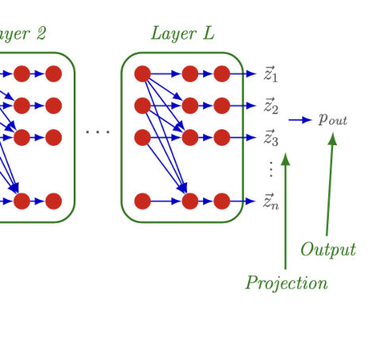
<figcaption class="paper-figure-caption"><b>Fig 1.</b> Figure 1: An idealized depiction of the core transformer architecture.</figcaption>
</figure>
<figure class="paper-figure-card">
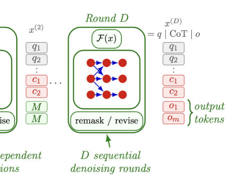
<figcaption class="paper-figure-caption"><b>Fig 2.</b> Figure 2: An idealized depiction of the core DLM architecture.</figcaption>
</figure>
<figure class="paper-figure-card">
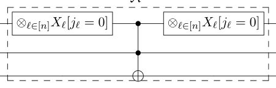
<figcaption class="paper-figure-caption"><b>Fig 3.</b> Figure 4: Illustration of quantum circuit Aj used for equality check [ij = j] and outputting the corresponding bit xj if true.</figcaption>
</figure>
<figure class="paper-figure-card">
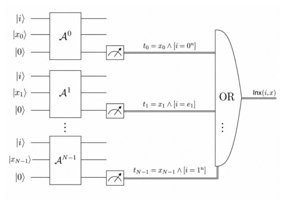
<figcaption class="paper-figure-caption"><b>Fig 4.</b> Figure 5: Illustration of the circuit used for outputting Inx(i, x) using copies of |i⟩and the circuit of Aj, ∀j ∈[N −1]0 from Figure 4.</figcaption>
</figure>
<figure class="paper-figure-card">
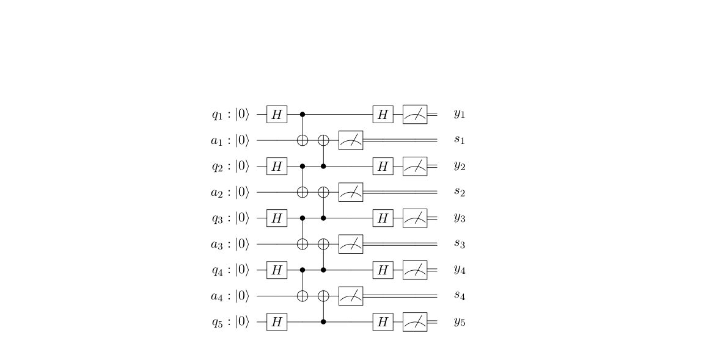
<figcaption class="paper-figure-caption"><b>Fig 5.</b> Figure 6: Illustration of circuit for preparing the poor man’s cat state and sampling from U⊕ 5 .</figcaption>
</figure>
</div>
<p><strong>Summary.</strong> This paper rigorously proves that low-depth quantum circuits possess computational capabilities fundamentally beyond those achievable by modern large language models (Transformers and DLMs). By showing separations in both the ability to sample certain distributions and the complexity of computing specific functions, it initiates a formal study of quantum advantage within the AI domain.</p>
<p><strong>Why it may be interesting.</strong> This work directly addresses quantum advantage in the context of state-of-the-art AI models, providing theoretical benchmarks for when quantum computation might outperform classical deep learning methods.</p>
<details>
<summary>Detailed structure</summary>
<p><strong>Main problem.</strong> To establish unconditional separations between low-depth quantum computation ($   ext{QNC}_0$) and classical Large Language Model (LLM) architectures like Transformers and Diffusion Language Models (DLMs).</p>
<p><strong>Main result.</strong> The authors prove both distributional separation (a specific distribution sampleable by $  ext{QNC}_0$ but not by constant-round DLMs) and functional separation (a function computable by shallow quantum circuits requiring a prohibitively large width in any constant-depth transformer).</p>
<p><strong>Method.</strong> The work employs complexity theory, constructing specific computational tasks (distribution sampling and function computation) to compare the inherent power of bounded-depth quantum gates versus the resource scaling (width $H_{dp}$) of modern LLMs.</p>
<p><strong>Model / system.</strong> The models compared are low-depth quantum circuits ($   ext{QNC}_0$) and classical neural network architectures, specifically decoder-only Transformers and Diffusion Language Models. The analysis focuses on their computational capacity under shallow depth constraints.</p>
<p><strong>Key observables.</strong> Distributional distance (for sampling), required width ($H_{dp}$) for functional computation, and circuit depth ($ ext{QNC}_0$ depth).</p>
<p><strong>Important parameters / regimes.</strong> Constant depth, $\mathcal{O}(\log \log n)$ depth, input length $n$, and the resource metric $H_{dp}$.</p>
<p><strong>Assumptions / limitations.</strong> The separations are based on specific complexity-theoretic tasks designed to highlight structural differences between quantum computation and LLM mechanisms.</p>
<p><strong>Paper structure.</strong> The paper develops arguments by first establishing foundational separations between $  ext{QNC}_0$ and classical circuits, then extending this comparison specifically to the operational constraints of modern DLMs (including revision/remasking steps) for both distributional and functional tasks.</p>
</details>
<details>
<summary>Abstract</summary>
<p>Modern large language models - transformers and diffusion language models - are built around two canonical algorithmic tasks: prediction and generation. We prove unconditional separations between low-depth quantum computation and the corresponding bounded-resource classical language-model architectures in both regimes. Concretely, we exhibit the following:   1. Distributional separation. We give a distribution that is sampleable by $\textsf{QNC}^0$ circuits (i.e., a family of constant-depth quantum circuits consisting of bounded fan-in gates) that no constant-round diffusion language model ($\textsf{DLM}$) with shallow scheduling and denoising can sample within constant distance, even when allowed sublinear chain-of-thought and output-token revision/remasking events, the very features modern $\textsf{DLM}$s rely on.   2. Functional separation. We exhibit a function computable in $\land \circ \textsf{QNC}^0[\log\log n]$ (i.e., a family of O$(\log\log n)$-depth $\textsf{QNC}^0$ circuits, where $n$ is the input length, followed by a single classical $\mathsf{AND}$ gate) such that any constant-depth decoder-only transformer computing the function must be large: it would have to have width $n^{Ω(1)}$.   Together, our work initiates the study of quantum advantage in the era of large language models.</p>
</details>
<p><sub><a href="#top">↑ back to top</a></sub></p>

<p><a id="paper-2608.02726"></a></p>
<h3 id="unweighted-gapped-clique-homology-is-math1049math-complete"><a href="http://arxiv.org/abs/2608.02726v1">Unweighted Gapped Clique Homology is $\mathsf{QMA}_1$-complete</a></h3>
<p><strong>Authors:</strong> Ryu Hayakawa<br>
<strong>Type:</strong> theory · <strong>Category:</strong> quantum information and computing · <strong>PDF:</strong> <a href="https://arxiv.org/pdf/2608.02726v1">https://arxiv.org/pdf/2608.02726v1</a><br>
<strong>Analysis basis:</strong> full PDF text, analyzed in chunks</p>
<div class="figure-strip-hint">↔ Scroll figures horizontally</div>
<div class="paper-figures-scroll">
<figure class="paper-figure-card">
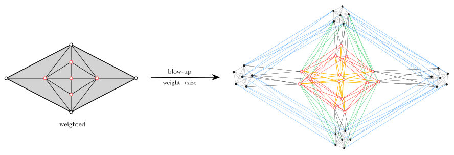
<figcaption class="paper-figure-caption"><b>Fig 1.</b> Figure 1: The blow-up correspondence. A weighted base complex is replaced by an unweighted expanded complex in which vertex weights are represented by block sizes. For simplicity, only the expanded vertices and incomplete edges are drawn. Symmetric averages over one-copy-per- block choices reconstruct the weighted Hodge metric. The illustration uses block sizes 6 and 3, exhibiting an integral ratio of 2.</figcaption>
</figure>
<figure class="paper-figure-card">
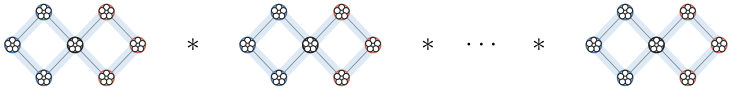
<figcaption class="paper-figure-caption"><b>Fig 2.</b> Figure 2: The qubit-register blow-up. A one-qubit bowtie has two harmonic cycles representing |0⟩and |1⟩. In the expanded register, each vertex is replaced by a complete graph and each bowtie edge by the corresponding complete bipartite connection. The n-qubit register is the join product of these one-qubit expanded graphs. Each register block has size M = ρ; the displayed copy counts are schematic.</figcaption>
</figure>
<figure class="paper-figure-card">
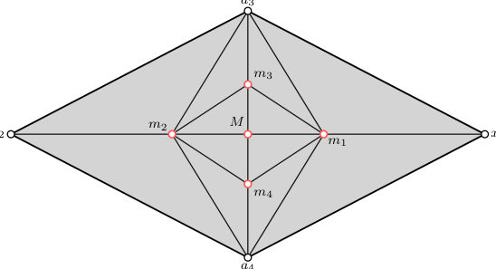
<figcaption class="paper-figure-caption"><b>Fig 3.</b> Figure 3: A schematic single-projector filling gadget. The boundary cycle is filled by an interior membrane, so the selected encoded cycle becomes null-homologous while the orthogonal cycles are preserved by the selectivity argument. The drawing suppresses the cut-and-reglue triangu- lation and clique-closure data used in that argument.</figcaption>
</figure>
</div>
<p><strong>Summary.</strong> The paper proves that deciding the homology of an unweighted clique complex, given a spectral gap promise on its Laplacian, is $\mathsf{QMA}_1$-complete. It achieves this by showing that the complexity originates from the gap condition itself, not from vertex weights, using sophisticated blow-up constructions to map quantum Hamiltonian gaps onto topological invariants.</p>
<p><strong>Why it may be interesting.</strong> This work connects deep concepts from algebraic topology (homology), spectral theory (Laplacians/gaps), and quantum complexity theory ($\mathsf{QMA}$), providing a powerful tool for classifying computational problems arising from physical structures.</p>
<details>
<summary>Detailed structure</summary>
<p><strong>Main problem.</strong> The paper tackles the computational complexity of determining if a graph's clique complex has nontrivial homology, especially when spectral gap promises are involved.</p>
<p><strong>Main result.</strong> It proves that Unweighted Gapped Clique Homology is $\mathsf{QMA}_1$-complete, demonstrating that the difficulty stems from the spectral gap promise rather than vertex weighting.</p>
<p><strong>Method.</strong> The proof uses a 'blow-up' construction to transform weighted homology problems into unweighted ones, relying on detailed spectral analysis of the Hodge Laplacian.</p>
<p><strong>Model / system.</strong> The model involves clique complexes derived from graphs ($Cl(G)$) and their associated combinatorial Hodge Laplacians ($\Delta_k$). The complexity is linked to quantum computation via Hamiltonian gap properties.</p>
<p><strong>Key observables.</strong> Homology group $H_k(X; \mathbb{R})$ (non-trivial vs. trivial), minimum eigenvalue of the Laplacian $\lambda_{\min}(\Delta_k)$, and spectral gaps ($p(N)$).</p>
<p><strong>Important parameters / regimes.</strong> Vertex weights, gap size promise ($1/	ext{poly}(N)$), and the universal gate set $g_2$ for $\mathsf{QMA}_1^{g_2}$.</p>
<p><strong>Assumptions / limitations.</strong> The analysis assumes the existence of a source Hamiltonian whose spectral properties can be mapped to the homology gaps via the blow-up construction.</p>
<p><strong>Figures summary.</strong> Figure 3 schematically illustrates a single-projector filling gadget, showing how an interior membrane nullifies a boundary cycle while preserving orthogonal cycles.</p>
<p><strong>Paper structure.</strong> The paper progresses by first establishing hardness for weighted complexes, then developing the 'blow-up' construction to eliminate weights, and finally proving both $\mathsf{QMA}_1$-hardness (via gap preservation) and containment in $\mathsf{QMA}_1^{g_2}$.</p>
</details>
<details>
<summary>Abstract</summary>
<p>Deciding whether the clique complex of a given graph has nontrivial homology in a given dimension, under vertex-product weighting and an inverse-polynomial spectral gap promise on the combinatorial Hodge Laplacian, is known to be $\mathsf{QMA}_1$-hard and contained in $\mathsf{QMA}$ by King and Kohler (FOCS 2024). The vertex weights are essential in the known proof, where they provide the scale separation needed for the spectral gap analysis. We prove that, when every vertex has weight one, the problem remains $\mathsf{QMA}_1^{g_2}$-hard and is contained in $\mathsf{QMA}_1^{g_2}$, where $\mathsf{QMA}_1^{g_2}$ is $\mathsf{QMA}_1$ with the universal gate set $g_2=\{\mathsf{X},\mathsf{CX},\mathsf{CCX},H\otimes H\}$. The construction replaces weight by expansion: each vertex of the weighted complex is blown up into a clique whose size encodes its weight. The block sizes are chosen so that symmetric averages reproduce the weighted Hodge metric. The symmetric sector therefore carries the weighted Laplacian up to a common scalar factor, while a local averaging argument gives a uniform lower bound on the orthogonal complement to the symmetric sector. Hence the weighted gap analysis transfers to an unweighted clique complex without introducing either additional low-energy states or spurious homology. Containment in $\mathsf{QMA}_1^{g_2}$ follows from Rudolph's exact linear combination of unitaries simulation of sparse integer clique Laplacians. The result shows that the gap promise, rather than vertex weighting, is the source of the complexity of gapped clique homology.</p>
</details>
<p><sub><a href="#top">↑ back to top</a></sub></p>
</details>
<h2 id="secondary-cond-mat-archives">Secondary cond-mat archives</h2>
<p><em>Papers from cond-mat.mtrl-sci, mes-hall, other, soft, supr-con. These archives are de-prioritized — they appear at the end regardless of relevance score.</em></p>
<h3 id="relevant-in-secondary-archives-15">Relevant in secondary archives (15)</h3>

<p><a id="paper-2608.03278"></a></p>
<h3 id="topological-properties-and-phase-diagram-of-the-triangular-hofstadter-model-with-staggered-flux"><a href="http://arxiv.org/abs/2608.03278v1">Topological properties and phase diagram of the triangular Hofstadter model with staggered flux</a></h3>
<p><strong>Authors:</strong> Qi Gao, Wei Chen<br>
<strong>Type:</strong> theory · <strong>Category:</strong> other · <strong>PDF:</strong> <a href="https://arxiv.org/pdf/2608.03278v1">https://arxiv.org/pdf/2608.03278v1</a><br>
<strong>Analysis basis:</strong> full PDF text, analyzed in chunks
<strong>Topic relevance:</strong> 🔥 <code>analog quantum simulation</code> <strong>4/5</strong> · <code>correlated cavity matter</code> <strong>1/5</strong> · <code>driven-dissipative phase transition</code> <strong>1/5</strong> · <code>entanglement &amp; information structure</code> <strong>1/5</strong> · <code>exotic spin models in light-matter</code> <strong>1/5</strong> · <code>non-equilibrium dynamics</code> <strong>1/5</strong></p>
<div class="figure-strip-hint">↔ Scroll figures horizontally</div>
<div class="paper-figures-scroll">
<figure class="paper-figure-card">
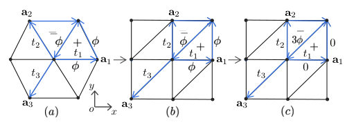
<figcaption class="paper-figure-caption"><b>Fig 1.</b> FIG. 1: (a) Triangular lattice with staggered flux ±3ϕ in adjacent triangles; the hopping amplitudes along the three bonds of a triangle are respectively t1, t2 and t3 with phase factor ϕ. The lattice model in (a) is topologically equivalent to a square lattice model in (b) with nearest neighbor hopping plus next nearest neighbor hopping in one diagonal direction, which is again equivalent to the lattice model in (c).</figcaption>
</figure>
<figure class="paper-figure-card">
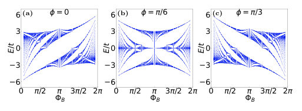
<figcaption class="paper-figure-caption"><b>Fig 2.</b> FIG. 2: The Hofstadter spectrum of the triangular lattice with staggered flux ϕ at t1 = t2 = t3 = t. (a): ϕ = 0; (b): ϕ = π/6; (c): ϕ = π/3. [29]</figcaption>
</figure>
<figure class="paper-figure-card">
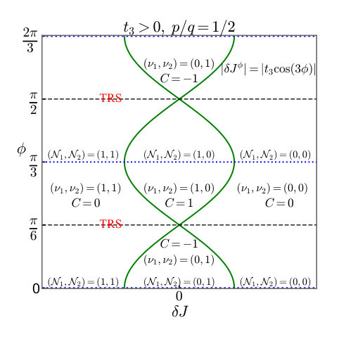
<figcaption class="paper-figure-caption"><b>Fig 3.</b> FIG. 3: Phase diagram of the dimerized model at half filling for p/q = 1/2 and t3 &gt; 0 over a period of ϕ. The two curves defined by |δJ| = |t3 cos 3ϕ| correspond to the gap-closing boudaries. The system is gapped away from the two curves with the labeled Chern number C. The indices (ν1, ν2) label the winding numbers at k1 = π</figcaption>
</figure>
<figure class="paper-figure-card">
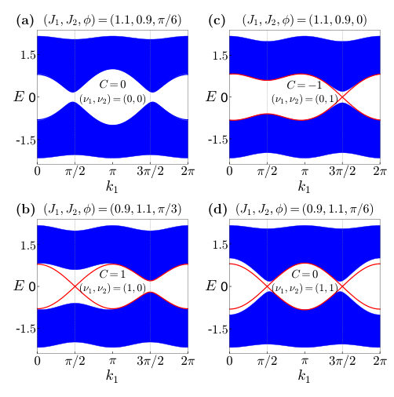
<figcaption class="paper-figure-caption"><b>Fig 4.</b> FIG. 4: Band structure of the dimerized model with p/q = 1/2 in a ribbon geometry of width 2N2a and t1 = 0.4, , t3 = 0.2 [29]. (a) Band structure in the regime J1 −J2 &gt; |2t3 cos 3ϕ|. (b) and (c) Band structure in the regime |J2 −J1| &lt; |2t3 cos 3ϕ|. (d) Band structure in the regime J1 −J2 &lt; −|2t3 cos 3ϕ|.</figcaption>
</figure>
<figure class="paper-figure-card">
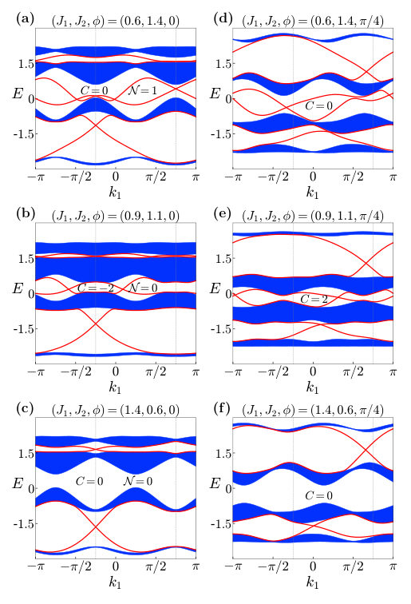
<figcaption class="paper-figure-caption"><b>Fig 5.</b> FIG. 5: The band structure of the dimerzied model with p/q = 1/4 in a ribbon geometry of width 4N2a and t1 = t3 = 0.5 [29]. (a) and (d) Band structure in the regime δJ &lt; −|δJc cos 3ϕ| for ϕ = 0 and π</figcaption>
</figure>
</div>

<p><strong>Summary.</strong> This work theoretically analyzes the topological phases of a triangular Hofstadter model used to simulate twisted bilayer TMDs. By studying how staggered flux and dimerization break symmetries, the authors map out complex phase diagrams characterized by quantized Chern numbers. The findings provide testable predictions for both solid-state materials and controllable cold atom systems.</p>
<p><strong>Why it may be interesting.</strong> While focused on condensed matter topology, the connection to moiré superlattices and tunable parameters (like electric displacement field) makes it highly relevant for AMO physicists working on engineered quantum systems using optical lattices or photonic crystals.</p>
<details>
<summary>Detailed structure</summary>
<p><strong>Main problem.</strong> The study investigates the topological properties and phase diagram of the triangular Hofstadter model incorporating staggered flux.</p>
<p><strong>Main result.</strong> The system exhibits rich topological phases dependent on whether the magnetic flux parameter q is even or odd, with distinct Chern number characteristics in different gapped regimes.</p>
<p><strong>Method.</strong> The analysis involves mapping the Hamiltonian to momentum space and calculating topological invariants (like the Chern number) by analyzing the energy spectrum's dependence on external fluxes and dimerization strength.</p>
<p><strong>Model / system.</strong> The model is the triangular Hofstadter lattice with staggered flux, relevant for describing twisted bilayer transition metal dichalcogenides (TMDs). The Hamiltonian incorporates both a uniform magnetic flux ($\Phi_B = 2\pi p/q$) and an additional staggered flux term.</p>
<p><strong>Key observables.</strong> Chern number ($C$), Hall conductivity ($\sigma_{xy}$), longitudinal conductivity ($\sigma_{xx}$), and the energy spectrum $E(\mathbf{k})$.</p>
<p><strong>Important parameters / regimes.</strong> Rational external magnetic flux $\Phi_B = 2\pi p/q$, staggered flux parameter $\phi$, and dimerization strength ($\delta J$).</p>
<p><strong>Assumptions / limitations.</strong> The analysis assumes a tight-binding description for the low energy physics, and specific symmetries (like P symmetry) are analyzed at certain flux values.</p>
<p><strong>Figures summary.</strong> Figures illustrate the Hofstadter spectrum for various fluxes and depict the phase diagram behavior based on the rational flux ratio $p/q$ and dimerization strength.</p>
<p><strong>Paper structure.</strong> The paper first introduces the Hamiltonian, then analyzes the effect of staggered flux symmetry. It proceeds to study the dimerized model's phase diagram separately for even and odd values of q, concluding with implications for experimental realization in TMDs or cold atoms.</p>
</details>
<details>
<summary>Abstract</summary>
<p>We study the topological properties and phase diagram of the triangular Hofstadter model with staggered flux in adjacent triangles in this work. This lattice can be used to describe the low energy physics of the twisted bilayer transition metal dichalcogenides (TMD) in a certain range of the electric displacement field between the two layers. We show that the Hofstadter spectrum of this model is generally asymmetric except at specific staggered flux $3φ= π/2 \mod π$ due to an additional P symmetry at such $φ$. Breaking the translation symmetry by dimerization lifts the P symmetry and results in rich topological phases in the system. The dimerized model with different rational external magnetic flux $Φ_B = 2πp/q$ has phase diagram with the following common features. For even q, the dimerized model generally has three gapped regimes. The one with small dimerization has finite Chern number and the other two have zero Chern number. For odd q, the model is gapped with zero Chern number at any finite dimerization. For both q even and odd, the two regimes with zero Chern number can be further characterized by the inversion symmetry of the parametrized one-dimensional chains of the system at φ= 0 \mod π/3$, and one regime is topologically non-trivial and the other is trivial. Our results may be tested in twisted bilayer TMD with weak interaction or cold atom systems in optical lattice or photonic crystals achieved in recent experiments.</p>
</details>
<p><sub><a href="#top">↑ back to top</a></sub></p>

<p><a id="paper-2608.03853"></a></p>
<h3 id="magnetic-field-control-of-fermi-polaron-fine-structure-and-polarization-in-strained-monolayer-semiconductors"><a href="http://arxiv.org/abs/2608.03853v1">Magnetic-field control of Fermi polaron fine structure and polarization in strained monolayer semiconductors</a></h3>
<p><strong>Authors:</strong> Zakhar A. Iakovlev<br>
<strong>Type:</strong> theory · <strong>Category:</strong> other · <strong>PDF:</strong> <a href="https://arxiv.org/pdf/2608.03853v1">https://arxiv.org/pdf/2608.03853v1</a><br>
<strong>Analysis basis:</strong> full PDF text, analyzed in chunks
<strong>Topic relevance:</strong> <code>Keldysh / 2PI / non-Gaussian methods</code> <strong>3/5</strong> · <code>spintronics-quantum-optics interface</code> <strong>3/5</strong> · <code>driven-dissipative phase transition</code> <strong>2/5</strong> · <code>methods for driven-dissipative</code> <strong>2/5</strong> · <code>Kondo &amp; dissipative impurity</code> <strong>1/5</strong> · <code>analog quantum simulation</code> <strong>1/5</strong> · <code>correlated / nonlocal dissipation</code> <strong>1/5</strong> · <code>exotic spin models in light-matter</code> <strong>1/5</strong> · <code>interference shaping light</code> <strong>1/5</strong> · <code>non-equilibrium dynamics</code> <strong>1/5</strong></p>
<div class="figure-strip-hint">↔ Scroll figures horizontally</div>
<div class="paper-figures-scroll">
<figure class="paper-figure-card">
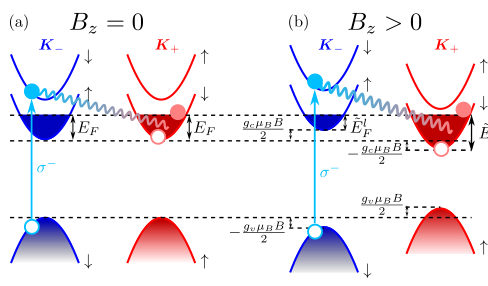
<figcaption class="paper-figure-caption"><b>Fig 1.</b> Figure 1. Intervalley Fermi polaron in W-based TMDC mono- layer (a) without magnetic field and (b) in external magnetic field. Zeeman shifts of the bands, Eqs. (4), are shown in panel (b). Exciton in K−-valley is excited by left circularly polarized light. Black arrows demonstrate electron spin in the subbands. The valley polarization is demonstrated via the change of Fermi energy, Eqs. (35), (37).</figcaption>
</figure>
<figure class="paper-figure-card">

<figcaption class="paper-figure-caption"><b>Fig 2.</b> Figure 2. (a,c) Circular dichroism of absorption Pc(E), Eq. (43), and (b,d) absorption spectra of unpolarized light A, Eq. (44), as a function of magnetic field for W-based TMDC. (a,b) Small doping Ne = 1010 cm−2, Bcrit = 1 T, (c,d) mod- erate doping Ne = 8·1010 cm−2, Bcrit = 8 T. The parameters are ET 1 = 22 meV, ET 2 = 18 meV, Me = Mh = 0.4m0, gX = −4, gc = 2 and ℏγ = 0.2 meV.</figcaption>
</figure>
<figure class="paper-figure-card">

<figcaption class="paper-figure-caption"><b>Fig 3.</b> Figure 3. Circular dichroism of absorption Pc(E), Eq. (43), in the spectral range of attractive Fermi polarons at magnetic field B = 10 T for (a) W-based TMDC and (b) Mo-based TMDC. Red and cyan lines show inter- and intravalley Fermi polaron levels in W-based TMDC, Eq. (47), brown lines show intervalley Fermi polaron levels in Mo-based TMDC, Eq. (48). Dashed lines show R-polarized sublevels, dashed-dotted lines show L-polarized sublevels. The inset demonstrates the at- tractive Fermi polaron energy splittings with the same colors as the main figure, black line shows exciton splitting, that is equal to the bare trion splitting. The critical electron den- sity, corresponding to Bcrit = 10 T,...</figcaption>
</figure>
<figure class="paper-figure-card">

<figcaption class="paper-figure-caption"><b>Fig 4.</b> Figure 4. (a) The Fermi polaron radiative doublet splitting and (b) circular polarization in terms of Stokes parameter S3 for strained TMDC monolayers as a function of mag- netic field. Cyan lines show intravalley Fermi polaron dou- blets, while red lines show intervalley Fermi polarons. Solid lines in (a) correspond to the numerical solution of Eq. (55), while dashed-dotted lines correspond to analytical approxi- mation, Eq. (54). Color lines in (b) correspond to eigen- states of Green’s matrix, Eq. (50), while thin solid black lines correspond to their approximation with g = gX for sim- plicity, Eq. (56). Solid brown lines show energy level split- ting, Eq. (B5), and Stokes parameter S3,...</figcaption>
</figure>
<figure class="paper-figure-card">

<figcaption class="paper-figure-caption"><b>Fig 5.</b> Figure 5. (a) Circular dichroism of absorption Pc(E), Eq. (43), (b) linear dichroism of absorption Pl(E) =  AX −AY  /A, (c) absorption spectrum of unpolarized light A, Eq. (30), as a function of magnetic field for strained W-based TMDC. (d) Circu- lar dichroism of reflection, (e) linear dichroism of reflection, (f) reflection spectrum of unpolarized light. Note that the absolute value of absorption is ∼10 times greater than reflection. Color lines describing Fermi polaron energies are the same as in Fig. 4. The phenomenological broadening ℏΓ = 0.1 meV, the radiative decay rate Γ0 = 0.65 ps−1 [68], and other parameters are the same as in Fig. 4 with Ne = 8 · 1010 cm−2 and Bcrit = 8 T.</figcaption>
</figure>
</div>

<p><strong>Summary.</strong> This paper develops a theoretical framework to understand how the energy structure and polarization of Fermi polarons are controlled in 2D semiconductor monolayers using combined magnetic fields and mechanical strain. By calculating optical spectra via Green's functions, it demonstrates that these external parameters offer powerful, complementary tools for manipulating many-body excitonic quasiparticles.</p>
<p><strong>Why it may be interesting.</strong> This work is highly relevant as it treats open quantum systems dynamics (excitons coupled to a Fermi sea) under external fields, providing detailed predictions for magneto-optical responses that can be probed experimentally.</p>
<details>
<summary>Detailed structure</summary>
<p><strong>Main problem.</strong> The theory develops the fine structure and polarization of Fermi polarons in doped two-dimensional semiconductors under the combined influence of external magnetic fields and uniaxial strain.</p>
<p><strong>Main result.</strong> The study shows that controlling strain, magnetic field, and electron density allows continuous tuning of energy splitting and eigenstate polarization. Real and strain-induced pseudomagnetic fields provide complementary tools for controlling optical response.</p>
<p><strong>Method.</strong> The research employs the Green's function approach to calculate energy levels and Stokes parameters, supplemented by a simplified effective two-level model for analytical study.</p>
<p><strong>Model / system.</strong> The system involves excitons interacting with a Fermi sea of resident charge carriers in TMDC monolayers. The Hamiltonian incorporates terms for external magnetic fields (Zeeman shifts) and strain ($\hat{H}_s$).</p>
<p><strong>Key observables.</strong> Energy levels, Stokes parameters, absorption/reflection spectra, circular and linear dichroism, and the polaron g factor renormalization.</p>
<p><strong>Important parameters / regimes.</strong> External magnetic field ($B$), uniaxial strain, electron density, and critical magnetic fields leading to full valley polarization.</p>
<p><strong>Assumptions / limitations.</strong> Orbital effects of the magnetic field are neglected due to a small scattering time ($    au_e$). The analysis assumes $\mathbf{B}$ does not affect interaction parameters $V_1$ and $V_2$.</p>
<p><strong>Figures summary.</strong> Figure 1 illustrates the intervalley Fermi polaron in W-based TMDC monolayers, showing Zeeman shifts both without and with an external magnetic field.</p>
<p><strong>Paper structure.</strong> The theory builds from the non-interacting Hamiltonian ($\hat{H}_0$), incorporates magnetic field effects ($\hat{H}_B$) via the full Hamiltonian $\hat{H}$, and finally analyzes optical properties using Green's functions, culminating in spectral calculations for various regimes.</p>
</details>
<details>
<summary>Abstract</summary>
<p>The theory of attractive Fermi polaron energy spectrum fine structure and polarization in doped two-dimensional semiconductors in external magnetic field is developed. Fermi polaron $g$ factor renormalization due to correlations with the valley-polarized Fermi sea of resident charge carriers is calculated. We study the competition between Zeeman and strain-induced splittings in monolayers under uniaxial strain. The control of strain, magnetic field and electron density allows continuous tuning of energy splitting and eigenstate polarization. Linearly polarized strain-induced split doublet exhibits quadratic Zeeman shift changing to linear Zeeman splitting with elliptical polarization with the increase of magnetic field. We identify a critical magnetic field above which resident charge carriers become fully valley polarized and only one circularly polarized Fermi polaron state remains. Within the Green's function approach we calculate energy levels and Stokes parameters of attractive Fermi polaron states and introduce a simplified effective two-level model allowing us to study analytically the interplay of Zeeman and pseudo-Zeeman splitting. We calculate absorption and reflection spectra, including circular and linear dichroism in the trion spectral range. These results show that real and strain-induced pseudomagnetic fields provide complementary tools for controlling the optical response of many-body excitonic quasiparticles in two-dimensional semiconductors.</p>
</details>
<p><sub><a href="#top">↑ back to top</a></sub></p>

<p><a id="paper-2608.02783"></a></p>
<h3 id="transition-to-spatiotemporal-chaos-with-multiple-colliding-pulse-sequences-of-the-nonlinear-schrodinger-equation"><a href="http://arxiv.org/abs/2608.02783v1">Transition to spatiotemporal chaos with multiple colliding pulse sequences of the nonlinear Schrödinger equation</a></h3>
<p><strong>Authors:</strong> Avner Peleg, Debananda Chakraborty<br>
<strong>Type:</strong> theory · <strong>Category:</strong> other · <strong>PDF:</strong> <a href="https://arxiv.org/pdf/2608.02783v1">https://arxiv.org/pdf/2608.02783v1</a><br>
<strong>Analysis basis:</strong> full PDF text, analyzed in chunks
<strong>Topic relevance:</strong> <code>driven-dissipative phase transition</code> <strong>3/5</strong> · <code>methods for driven-dissipative</code> <strong>3/5</strong> · <code>non-equilibrium dynamics</code> <strong>2/5</strong> · <code>non-equilibrium universality</code> <strong>2/5</strong> · <code>Frenkel-Kontorova</code> <strong>1/5</strong> · <code>Keldysh / 2PI / non-Gaussian methods</code> <strong>1/5</strong> · <code>analog quantum simulation</code> <strong>1/5</strong> · <code>correlated / nonlocal dissipation</code> <strong>1/5</strong></p>
<div class="figure-strip-hint">↔ Scroll figures horizontally</div>
<div class="paper-figures-scroll">
<figure class="paper-figure-card">

<figcaption class="paper-figure-caption"><b>Fig 1.</b> FIG. 1: A sketch of the waveguide array loops considered in the paper. (a) A side view. (b) A</figcaption>
</figure>
<figure class="paper-figure-card">

<figcaption class="paper-figure-caption"><b>Fig 2.</b> FIG. 2: Projections of the numerically obtained trajectories of the unshifted 1989 Di Cera model</figcaption>
</figure>
<figure class="paper-figure-card">

<figcaption class="paper-figure-caption"><b>Fig 3.</b> Fig. 2 shows the projections of the numerical solution’s trajectories in phase space on the</figcaption>
</figure>
<figure class="paper-figure-card">

<figcaption class="paper-figure-caption"><b>Fig 4.</b> FIG. 3: The z-dependences of the pulse energies Uj in the unshifted 1989 Di Cera model (28) for</figcaption>
</figure>
<figure class="paper-figure-card">

<figcaption class="paper-figure-caption"><b>Fig 5.</b> FIG. 4: The z-dependences of the pulse energies Uj in the unshifted 1989 Di Cera model (28) for</figcaption>
</figure>
</div>

<p><strong>Summary.</strong> This paper presents the first demonstration of spatiotemporal chaos arising from multiple colliding pulse sequences in nonlinear waveguide arrays. By deriving generalized Lotka-Volterra models via perturbation theory applied to coupled-NLS equations, the authors show that energy dynamics exhibit chaotic behavior. The key finding is the remarkable agreement between these simplified LV models and complex numerical simulations, even when strong pattern distortions occur.</p>
<p><strong>Why it may be interesting.</strong> This work bridges nonlinear wave physics (NLS) with classical dynamical systems (LV models), providing a robust theoretical framework for understanding complex energy dissipation in optical systems, which has implications for quantum optics and nonlinear signal processing.</p>
<details>
<summary>Detailed structure</summary>
<p><strong>Main problem.</strong> The study demonstrates the transition to spatiotemporal chaos when multiple colliding pulse sequences propagate in nonlinear waveguide arrays.</p>
<p><strong>Main result.</strong> Excellent agreement is found between generalized Lotka-Volterra (LV) models and coupled-NLS simulations for energy dynamics, confirming chaotic behavior even under strong distortions.</p>
<p><strong>Method.</strong> The authors used perturbation theory to derive LV models from the perturbed cubic Nonlinear Schrödinger equation (NLS), followed by extensive numerical simulations.</p>
<p><strong>Model / system.</strong> The system involves multiple sequences of optical pulses propagating in nonlinear waveguide arrays governed by perturbed coupled-NLS equations with cubic gain/loss. The dynamics are modeled using generalized Lotka-Volterra systems for energy evolution.</p>
<p><strong>Key observables.</strong> Pulse energy dynamics ($U_j(z)$) and the spatial pattern evolution ($\vert\psi_j(t, z)\vert$).</p>
<p><strong>Important parameters / regimes.</strong> The parameter $m$ is varied to explore different regimes; the cubic nonlinearity coefficient $\epsilon_3$ governs dissipation.</p>
<p><strong>Assumptions / limitations.</strong> Initial derivations relied on weak perturbation assumptions and periodicity of soliton sequences, which were later overcome by introducing a shifting transformation ($U' = U+a$).</p>
<p><strong>Figures summary.</strong> Figures illustrate pulse patterns ($\vert\psi_j(t, z)\vert$) for both unshifted and shifted models in chaotic regimes, alongside plots comparing energy evolution from coupled-NLS simulations against LV model predictions.</p>
<p><strong>Paper structure.</strong> The paper progresses by first analyzing single collision effects using perturbation theory to derive LV models, then applying these models to multisequence systems, and finally confirming the transition to chaos through numerical comparison between the full coupled-NLS equations and the derived LV dynamics.</p>
</details>
<details>
<summary>Abstract</summary>
<p>We present the first demonstration of transition to spatiotemporal chaos with multiple colliding pulse sequences in systems described by perturbed cubic nonlinear Schrödinger (NLS) equations. For this purpose, we consider propagation of multiple sequences of optical pulses in two distinct types of nonlinear waveguide arrays with cubic gain and loss. By employing a perturbation theory for NLS solitons, we show that the dynamics of pulse energies in the waveguide array systems is described by generalized Lotka-Volterra (LV) models, which exhibit dissipative chaos in a wide region in parameter space. We test the LV models' predictions for chaotic dynamics of pulse energies by extensive numerical simulations with perturbed systems of coupled-NLS equations. We find excellent agreement between the results of the LV and coupled-NLS models for energy dynamics in both types of waveguide array systems, despite the strong pulse pattern distortions and the strongly nonlinear nature of the dynamics.</p>
</details>
<p><sub><a href="#top">↑ back to top</a></sub></p>

<p><a id="paper-2608.03831"></a></p>
<h3 id="wavelength-selective-control-of-atomic-scale-au-contacts"><a href="http://arxiv.org/abs/2608.03831v1">Wavelength-Selective control of Atomic Scale Au Contacts</a></h3>
<p><strong>Authors:</strong> Werner Brämer-Escamilla, Floralba Lopez, Laila Procel, David Llerena, Carlos Sabater, Ernesto Medina<br>
<strong>Type:</strong> experiment · <strong>Category:</strong> other · <strong>PDF:</strong> <a href="https://arxiv.org/pdf/2608.03831v1">https://arxiv.org/pdf/2608.03831v1</a><br>
<strong>Analysis basis:</strong> full PDF text, analyzed in chunks
<strong>Topic relevance:</strong> <code>non-equilibrium dynamics</code> <strong>3/5</strong> · <code>driven-dissipative phase transition</code> <strong>2/5</strong> · <code>non-equilibrium universality</code> <strong>2/5</strong> · <code>Frenkel-Kontorova</code> <strong>1/5</strong> · <code>methods for driven-dissipative</code> <strong>1/5</strong> · <code>quantum measurements</code> <strong>1/5</strong> · <code>quantum optics experiment</code> <strong>1/5</strong></p>
<div class="figure-strip-hint">↔ Scroll figures horizontally</div>
<div class="paper-figures-scroll">
<figure class="paper-figure-card">

<figcaption class="paper-figure-caption"><b>Fig 1.</b> FIG. 1. Diagrammatic representation of the experimental setup. The distance between the contacts on the neck of the gold wire is controlled by a piezoelectric element, which is con- nected to a function generator via a piezoelectric controller. Both the conductance measurements and the switching of the lasers on and off are controlled by a computer via a DAQ (Data Acquisition Unit).</figcaption>
</figure>
<figure class="paper-figure-card">

<figcaption class="paper-figure-caption"><b>Fig 2.</b> FIG. 2. Experimental results for the conductance of a) an initially formed metallic bridge that is ruptured by the blue wavelength laser and b) an initially open gap, in which a metallic bridge is formed by the green wavelength laser. The black sequence of square pulses shows the junction conductance, while the blue (online) and yellow (online) represent laser pulses on the junction.</figcaption>
</figure>
<figure class="paper-figure-card">

<figcaption class="paper-figure-caption"><b>Fig 3.</b> Figure 2 shows the conductance dynamics for light- induced bridge rupture and bridge formation. In both protocols, up to 20 laser pulses are applied sequentially. Panel (a) shows that blue illumination ruptures a pre- existing metallic bridge: the conductance drops when the blue laser is turned on, and the bridge reforms after the laser is turned off. Panel (b) shows the complementary process: starting from an open gap, green illumination forms a metallic bridge, which ruptures again after the laser is turned off. Both behaviors are reproducible over many switching cycles. We expect two regimes of conduction for either the rup- ture or the formation of the contact: a tunneling regime before...</figcaption>
</figure>
<figure class="paper-figure-card">

<figcaption class="paper-figure-caption"><b>Fig 4.</b> FIG. 3. Conductance below G0 during gap closure prior to bridge formation under the formation wavelength. The semilogarithmic behavior is well described by an exponential transient, G(t) = Gpref exp[bf(t −t0)]. The physically rele- vant fit parameter is the logarithmic slope bf = 55.46 ms−1. .</figcaption>
</figure>
<figure class="paper-figure-card">

<figcaption class="paper-figure-caption"><b>Fig 5.</b> FIG. 5. Conductance below G0 after blue-light-induced bridge rupture. The exponential decay corresponds to drift- like gap opening in the tunneling regime. The physically rel- evant fit parameter is the logarithmic slope bb = 119.5 ms−1.</figcaption>
</figure>
</div>

<p><strong>Summary.</strong> The researchers achieved wavelength-selective control over the movement of atoms in gold nanocontacts using laser illumination. By comparing conductance changes under green versus blue light, they showed that different wavelengths drive opposite atomic drifts—one promoting bridge formation and the other promoting rupture. This establishes a new mechanism for reversibly controlling metallic contacts at the atomic scale.</p>
<p><strong>Why it may be interesting.</strong> This work provides a clean, measurable platform to study non-equilibrium atomic dynamics driven by light, which has implications for understanding energy dissipation and directed transport in nanoscale quantum devices.</p>
<details>
<summary>Detailed structure</summary>
<p><strong>Main problem.</strong> To demonstrate wavelength-selective control over atomic motion (drift) within metallic nanocontacts, moving beyond simple thermal switching mechanisms.</p>
<p><strong>Main result.</strong> Illumination at different wavelengths drives opposite and distinct atomic rearrangements—gap closure/growth with green light ($\lambda \simeq 530$ nm) versus neck thinning/rupture with blue light ($\lambda \simeq 407$ nm).</p>
<p><strong>Method.</strong> Time-resolved conductance measurements are performed on a mechanically controllable Au break junction, analyzing dynamics in both the tunneling and metallic regimes.</p>
<p><strong>Model / system.</strong> The system is an atomic-scale gold contact (Au nanogap) studied under ambient conditions. The analysis uses established models for conductance decay (exponential in tunneling regime) and linear growth ($\sqrt{G}$ vs time in metallic regime).</p>
<p><strong>Key observables.</strong> Conductance ($G$) vs Time, gap closing/opening velocities ($v_f, v_b$), and radial neck-growth/thinning velocities ($v_r$).</p>
<p><strong>Important parameters / regimes.</strong> Wavelengths ($\lambda_{	ext{form}} \simeq 530$ nm for formation; $\lambda_{	ext{rup}} \simeq 407$ nm for rupture); the quantum conductance unit ($G_0$).</p>
<p><strong>Assumptions / limitations.</strong> The observed reversal of motion is attributed to a wavelength-dependent modification of the effective free-energy landscape, rather than uniform heating.</p>
<p><strong>Figures summary.</strong> Figures illustrate conductance dynamics showing exponential transients during gap closure/opening and linear $\sqrt{G}$ vs time plots demonstrating growth (green light) or thinning (blue light).</p>
<p><strong>Paper structure.</strong> The paper establishes the experimental setup using an MCBJ, details measurements in both tunneling and metallic regimes, presents evidence for wavelength-dependent drift rates, and concludes by modeling this control via modified activation barriers.</p>
</details>
<details>
<summary>Abstract</summary>
<p>We demonstrate wavelength-selective control of atomic motion in a mechanically controllable Au break junction. Excitation at $λ_{\mathrm{form}}\simeq 530~{\rm nm}$ drives gap closure and metallic bridge formation, whereas excitation at $λ_{\mathrm{rup}}\simeq 407~{\rm nm}$ drives neck thinning, bridge rupture, and subsequent gap opening. Unlike conventional optical switching in metallic contacts, where illumination primarily acts via thermal expansion, the present experiment reveals oppositely directed atomic drift at different wavelengths. Time-resolved conductance traces allow us to distinguish two dynamical regimes. In the tunneling regime, exponential conductance transients measure the drift velocity of the gap coordinate for both gap closure and gap opening. In the metallic regime, the Sharvin relation converts linear $\sqrt{G/G_0}$ transients into radial neck-growth and neck-thinning velocities of comparable magnitude. These results establish optically selected atomic drift as a mechanism for reversible control of metallic nanocontacts and provide a quantitative route to follow plasmon-assisted atomic rearrangements in real time.</p>
</details>
<p><sub><a href="#top">↑ back to top</a></sub></p>

<p><a id="paper-2608.02981"></a></p>
<h3 id="electrostatic-superlattices-beyond-11-stoichiometry"><a href="http://arxiv.org/abs/2608.02981v1">Electrostatic Superlattices beyond 1:1 Stoichiometry</a></h3>
<p><strong>Authors:</strong> Binay P. Nayak, Prapti Kakkar, Wesley P. Korba, Honghu Zhang, Wenjie Wang, Surya K. Mallapragada, Alex Travesset, David Vaknin<br>
<strong>Type:</strong> both · <strong>Category:</strong> other · <strong>PDF:</strong> <a href="https://arxiv.org/pdf/2608.02981v1">https://arxiv.org/pdf/2608.02981v1</a><br>
<strong>Analysis basis:</strong> full PDF text, analyzed in chunks
<strong>Topic relevance:</strong> <code>analog quantum simulation</code> <strong>3/5</strong> · <code>driven-dissipative phase transition</code> <strong>2/5</strong> · <code>Frenkel-Kontorova</code> <strong>1/5</strong> · <code>correlated cavity matter</code> <strong>1/5</strong> · <code>entanglement &amp; information structure</code> <strong>1/5</strong> · <code>non-equilibrium dynamics</code> <strong>1/5</strong> · <code>non-equilibrium universality</code> <strong>1/5</strong></p>
<div class="figure-strip-hint">↔ Scroll figures horizontally</div>
<div class="paper-figures-scroll">
<figure class="paper-figure-card">

<figcaption class="paper-figure-caption"><b>Fig 1.</b> Fig. 1. Charge-regulated nanoparticle building blocks for superlattices beyond 1:1 stoichiometry. (a) Schematic of gold nanoparticles (AuNPs) with core diameters Dcore = 5 nm (yellow) and 10 nm (blue) functionalized with thiol-terminated poly(ethylene glycol) (PEG) bearing either NH2 (blue, +) or COOH (green, −) end groups; the sign of the corona charge is indicated throughout. The polymer-grafted particles are treated as effective hard spheres of diameters DA and DB, defining the size ratio γ = DB/DA, while θ denotes the molecular weight (MW) ratio of the oppositely charged PEG coronas. For identical PEG MW, the smaller, higher-curvature cores typically graft at a higher areal density,...</figcaption>
</figure>
<figure class="paper-figure-card">

<figcaption class="paper-figure-caption"><b>Fig 2.</b> Fig. 2. Molecular weight induced grafting density tran- sition from ZnS to CaF2. (a) Small-angle X-ray scattering (SAXS) intensity, I(Q) vs. Q, for COOH–PEG5k–Au5 and NH2– PEG10k–Au10 NPs mixed at a 2:1 number ratio. In a previous study, we demonstrated that a size ratio γ ≈0.7 (defined as the ratio of the larger to smaller functionalized AuNP diameters) sta- bilizes a defect-rich ZnS-type superlattice. In this system, the ZnS structure is formed by COOH–PEG5k–Au5 and NH2–PEG10k– Au10, and its pronounced defectivity is attributed to an imbal- ance in surface charge arising from asymmetric polymer coronas (see discussion below), leading to interstitial occupation or site- exchange defects....</figcaption>
</figure>
<figure class="paper-figure-card">

<figcaption class="paper-figure-caption"><b>Fig 3.</b> Figure 2 summarizes the structural evolution obtained by systematically varying the surface chemistry of the binary NP system while keep- ing the core sizes fixed (10 and 5 nm). For COOH–PEG5k–Au5 and NH2–PEG10k–Au10 mixed at a 2:1 number ratio, the SAXS pat- tern (Fig. 2a) is well described by a ZnS-type superlattice, albeit with signatures of nearest- neighbor site-exchange defects. Consistent with our previous results, a size ratio γ ≈0.7 stabi-</figcaption>
</figure>
<figure class="paper-figure-card">

<figcaption class="paper-figure-caption"><b>Fig 4.</b> Fig. 3. Emergence of a stoichiometric CaF2 superlattice from bulk mixing ratio. (a) SAXS diffraction pattern, I(Q) vs. Q, for COOH–PEG2k–Au5 and NH2–PEG5k–Au10 mixed at a 1:1 number ratio. Although this composition was predicted to favor a CaF2-like structure, the pattern exhibits only short-range order (SRO), indicating that the exact CaF2 stoichiometry is highly sensitive to the bulk particle ratio. (b) Increasing the mixing ratio 4:1 drives crystallization into a CaF2-type superlattice, evidenced by well-defined Bragg reflections. The SAXS profile is well described by a polycrystalline CaF2-like model. At a 2:1 ratio, the structure is of high quality, but a residual background persists,...</figcaption>
</figure>
<figure class="paper-figure-card">

<figcaption class="paper-figure-caption"><b>Fig 5.</b> Fig. 4. Symmetry breaking from CsCl to higher- stoichiometry Th3P4 superlattices. (a) SAXS intensity, I(Q) vs. Q, for a 4:1 number-ratio mixture of NH2–PEG5k–Au5 and COOH–PEG5k–Au10 at pH 3. The diffraction pattern is well described by an ideal Th3P4-type model. For the inverse ligand assignment (COOH–PEG5k–Au5 with NH2–PEG5k–Au10), the same core-size pair forms a CsCl (AB ) superlattice. 31 Swapping the ligand identities changes the curvature-dependent grafting density and hence the regulated surface charge densities, breaking the effective 1:1 charge balance that stabilizes CsCl and instead favoring a higher-stoichiometry Th3P4 superstructure (28 NPs per unit cell; nominal A : B = 3 : 4)....</figcaption>
</figure>
</div>

<p><strong>Summary.</strong> This work details the controlled self-assembly of nanoparticle superlattices to create exotic, high-stoichiometry crystalline analogues. By manipulating surface chemistry and particle ratios, researchers can drive structural transitions beyond simple 1:1 stoichiometry into complex phases like $    ext{CaF}_2$ or $    ext{Th}_3   ext{P}_4$. This provides a powerful platform for designing materials with tailored electronic and photonic properties.</p>
<p><strong>Why it may be interesting.</strong> While focused on materials science, the concept of controlling emergent collective states (superlattices) through tunable local interactions (charge mismatch) shares conceptual parallels with engineered quantum many-body systems where boundary conditions or interaction strengths dictate the final ground state structure.</p>
<details>
<summary>Detailed structure</summary>
<p><strong>Main problem.</strong> The research aims to overcome limitations in synthesizing electrostatic superlattices, specifically achieving high stoichiometry beyond simple 1:1 ratios.</p>
<p><strong>Main result.</strong> By systematically tuning parameters like grafting density and particle size, the authors demonstrate controlled transitions from parent lattices (e.g., ZnS) to higher-stoichiometry analogues ($  ext{CaF}_2$, $  ext{Th}_3   ext{P}_4$).</p>
<p><strong>Method.</strong> The study combines experimental techniques like in situ Small-Angle X-ray Scattering (SAXS) with theoretical understanding of charge regulation and structural phase transitions.</p>
<p><strong>Model / system.</strong> The system involves polymer-grafted nanoparticles (NPs) acting as building blocks for ionic lattice analogs. The assembly is governed by electrostatic interactions modulated by controlled charge mismatch across different NP species.</p>
<p><strong>Key observables.</strong> SAXS diffraction patterns, Bragg reflections, and the degree of structural order (Long-, Short-, Medium-Range Order).</p>
<p><strong>Important parameters / regimes.</strong> Size ratio ($\gamma$), grafting density asymmetry, polymer molecular weights ($ ext{PEG}x   ext{k}$), and bulk particle mixing ratios.</p>
<p><strong>Assumptions / limitations.</strong> The analysis assumes that the structural evolution is dictated by satisfying local charge neutrality through progressive interstitial filling or reorganization into larger unit cells.</p>
<p><strong>Figures summary.</strong> Figures illustrate schematic structural sequences based on size ratio (Fig. 1) and show SAXS intensity data confirming transitions between different superlattice types ($ ext{ZnS}    o   ext{CaF}_2$) upon tuning polymer chemistry (Fig. 2).</p>
<p><strong>Paper structure.</strong> The paper progresses by establishing the physical model using functionalized NPs, demonstrating controlled structural transitions from simple to complex stoichiometries via systematic parameter tuning, and confirming these changes using SAXS.</p>
</details>
<details>
<summary>Abstract</summary>
<p>Exotic nanoparticle superstructures can be accessed by harnessing nanoparticle softness and charge regulation, features often viewed as obstacles to structural control. Here, we show that regulated charge mismatch in polymer-grafted nanoparticles enables the assembly of high-stoichiometry cubic superlattices. By co-tuning grafting density, particle size, and bulk composition, we realize ionic-lattice analogues such as CaF2 and Th3P4, as well as single-component A3 and A7 superlattices without atomic counterparts. The A3 lattice has recently been identified theoretically as a photonic band-gap lattice. These phases emerge from a 1:1 "parent" lattice when local charge neutrality cannot be satisfied, driving either progressive interstitial filling or reorganization into a larger basis. For instance, the systematic occupation of ZnS tetrahedral sites yields CaF2, while ligand-swapping symmetry breaking converts CsCl into Th3P4. Upon heating, the assemblies exhibit reversible lattice contraction and pronounced negative thermal expansion. Furthermore, the energetic penalty for defects increases with nanoparticle size, facilitating the scalable production of high-quality, open superlattices for photonic applications.</p>
</details>
<p><sub><a href="#top">↑ back to top</a></sub></p>

<p><a id="paper-2608.02770"></a></p>
<h3 id="broken-site-symmetry-of-fe-adatoms-on-bimath1112mathtemath1113math"><a href="http://arxiv.org/abs/2608.02770v1">Broken site symmetry of Fe adatoms on Bi$_2$Te$_3$</a></h3>
<p><strong>Authors:</strong> Duy Nguyen, Hari Paudyal, Joseph R. Sink, Michael E. Flatte, Jay A. Gupta<br>
<strong>Type:</strong> both · <strong>Category:</strong> other · <strong>PDF:</strong> <a href="https://arxiv.org/pdf/2608.02770v1">https://arxiv.org/pdf/2608.02770v1</a><br>
<strong>Analysis basis:</strong> full PDF text, analyzed in chunks
<strong>Topic relevance:</strong> <code>spintronics-quantum-optics interface</code> <strong>3/5</strong> · <code>driven-dissipative phase transition</code> <strong>2/5</strong> · <code>Keldysh / 2PI / non-Gaussian methods</code> <strong>1/5</strong> · <code>Kondo &amp; dissipative impurity</code> <strong>1/5</strong> · <code>methods for driven-dissipative</code> <strong>1/5</strong> · <code>non-equilibrium dynamics</code> <strong>1/5</strong></p>
<div class="figure-strip-hint">↔ Scroll figures horizontally</div>
<div class="paper-figures-scroll">
<figure class="paper-figure-card">

<figcaption class="paper-figure-caption"><b>Fig 1.</b> FIG. 1. STM identification of fcc- and hcp-Fe adsorp- tion sites on Bi2Te3. (a) Large-area constant-current STM topograph of Fe adatoms deposited on the Te-terminated Bi2Te3(111) surface (21 nm×16 nm, V = +0.4 V, Iset = 0.1 nA), showing that Fe predominantly occupies fcc hollow sites. (b, c) High-resolution images of an fcc-Fe adatoms ac- quired at sample-bias voltages of +0.4 V and −0.4 V, respec- tively (Iset = 0.3 nA). (d, e) Corresponding images of an hcp- site Fe adatom acquired under the same tunneling conditions. (f, g) Top and side views of atomic models for Fe adsorbed at the fcc and hcp hollow sites, respectively. Fe, Te, and Bi atoms are shown in red, orange, and blue,...</figcaption>
</figure>
<figure class="paper-figure-card">

<figcaption class="paper-figure-caption"><b>Fig 2.</b> FIG. 2. (a) Constant-current image of an fcc-site Fe shows three bright lobes exhibiting near three-fold symme- try. (b) Simultaneously acquired dI/dV image reveals un- equal intensity among the lobes, indicating reduced symmetry (V = −0.2 V, Iset = 0.3 nA, Vmod = 25 mV). (c) Line profiles extracted along the dashed path in (a) and (b) compare the topographic height (blue) and dI/dV intensity (orange). The topography exhibits peak height variations by only ∼3 pm between lobes, while showing larger changes in dI/dV .</figcaption>
</figure>
<figure class="paper-figure-card">

<figcaption class="paper-figure-caption"><b>Fig 3.</b> FIG. 3. Calculated structural relaxation of the fcc-site Fe adatom on Bi2Te3. Relaxed adsorption geometry showing displacement of the Fe atom from the symmetric C3v hollow site toward a nn-Te atom, reducing the symmetry to C1v.</figcaption>
</figure>
<figure class="paper-figure-card">

<figcaption class="paper-figure-caption"><b>Fig 4.</b> FIG. 4. (a) Normalized dI/dV spectra acquired on an fcc-site Fe adatom in Bi2Te3 reveal a common set of impurity resonances in the occupied and unoccupied states, with the spectral weight varying between the nn-Te and nnn-Te. The locations at which the spectra were acquired are indicated by correspondingly colored dots in the inset STM image; the Bi2Te3 spectrum is shown in gray. The spectra were acquired at a setpoint of Vset = −0.5 V and Iset = 2 nA. (b) pDOS for the relaxed fcc-site Fe adatom configuration. Upper: Fe-site pDOS resolved by d-orbital character, showing pronounced peaks dominated by dxz &amp; dyz in the occupied states and dz2 and dx2−y2 &amp; dxy in the unoccupied states. Lower:...</figcaption>
</figure>
<figure class="paper-figure-card">

<figcaption class="paper-figure-caption"><b>Fig 5.</b> FIG. 5. Bias-dependent imaging of the fcc-site Fe adatom on Bi2Te3. (a)–(e) Constant-current topographic images and (f)–(j) Simultaneously acquired dI/dV maps at sample-bias voltages of −0.2, −0.1, +0.25, +0.3, and +0.4 V, respectively (Iset = 0.3 nA, Vmod = 25 mV). (k)–(o) Simulated dI/dV maps from tight-binding calculations at the corresponding energies. The color scale represents log(LDOS).</figcaption>
</figure>
</div>

<p><strong>Summary.</strong> This work combines STM imaging with DFT calculations to study Fe adatoms on $  ext{Bi}_2   ext{Te}_3$. While topography suggests high threefold symmetry, spectroscopic measurements reveal pronounced symmetry breaking. The theoretical analysis attributes this change to a Jahn-Teller distortion, reducing the site symmetry from $C_{3v}$ to $C_{1v}$, which is confirmed by electronic structure calculations.</p>
<p><strong>Why it may be interesting.</strong> The explicit link between a geometric/structural instability (Jahn-Teller effect) and measurable electronic anisotropy in a topological material is highly relevant for understanding symmetry control in quantum devices.</p>
<details>
<summary>Detailed structure</summary>
<p><strong>Main problem.</strong> The study investigates how adsorbed Fe adatoms on $   ext{Bi}_2   ext{Te}_3(111)$ break the local symmetry, contrasting initial high-symmetry STM observations with spectroscopic evidence.</p>
<p><strong>Main result.</strong> DFT calculations confirm that the system undergoes a static Jahn-Teller distortion, reducing the adsorption symmetry from $C_{3v}$ to $C_{1v}$, which is consistent with observed electronic anisotropy in $   ext{d}I/    ext{d}V$ maps.</p>
<p><strong>Method.</strong> The research combines Scanning Tunneling Microscopy (STM) spectroscopy with Density Functional Theory (DFT) calculations and tight-binding Green's function simulations.</p>
<p><strong>Model / system.</strong> The physical system is Fe adatoms adsorbed on the $ ext{Bi}_2   ext{Te}_3(111)$ surface. The theoretical modeling involves calculating the resolvent using a tight-binding Hamiltonian parameterized by orbital and orientation dependent terms.</p>
<p><strong>Key observables.</strong> Topographic contrast ($C_{3v}$ vs $C_{1v}$), differential conductance ($   ext{d}I/    ext{d}V$) spectral weight variation, structural relaxation energy difference ($72.5 	ext{ meV}$), and orbital character of the density of states.</p>
<p><strong>Important parameters / regimes.</strong> Temperature (4.5 K), DFT functional (PBE), distortion energy ($\Delta E = 72.5 	ext{ meV}$), and specific orbital characters ($d_{xz}, d_{yz}$, etc.).</p>
<p><strong>Assumptions / limitations.</strong> The observed asymmetry is intrinsic to the adsorption site, not due to tip artifacts; the structural relaxation mechanism is modeled via Jahn-Teller distortion.</p>
<p><strong>Figures summary.</strong> Figures compare STM topography and $   ext{d}I/    ext{d}V$ maps showing symmetry contrast, illustrate the structural transition from $C_{3v}$ to $C_{1v}$, and show DFT projected density of states (pDOS) confirming orbital splitting.</p>
<p><strong>Paper structure.</strong> The paper progresses by first presenting STM observations suggesting high symmetry ($C_{3v}$), then using $    ext{d}I/    ext{d}V$ spectroscopy to reveal symmetry breaking, followed by DFT calculations that identify the Jahn-Teller distortion mechanism leading to $C_{1v}$, and finally confirming this structural change via tight-binding simulations.</p>
</details>
<details>
<summary>Abstract</summary>
<p>We report a combined scanning tunneling microscopy and atomistic theoretical study of Fe adatoms on the Bi$_2$Te$_3$(111) surface. Topographic imaging at $4.5$~K shows Fe adatoms in fcc and hcp hollow sites exhibit a threefold-symmetric contrast, consistent with the $C_{3v}$ symmetry of the adsorption site. However, simultaneously acquired differential conductance ($dI/dV$) maps reveal a pronounced reduction in symmetry, evidenced by differential contrast observed at nearest-neighbor Te sites. Density functional theory calculations show that the Fe/Bi$_2$Te$_3$ system undergoes a static Jahn--Teller distortion, reducing the adsorption symmetry from $C_{3v}$ to $C_{1v}$, with the distorted configuration favored by $72.5$~meV. Orbital-projected density of states calculations show that the occupied states near the Fermi level are dominated by $d_{xz}$ and $d_{yz}$ orbitals, whereas the unoccupied states are primarily of $d_{z^2}$, $d_{x^2-y^2}$ and $d_{xy}$ character. The local density of states from these orbitals is in good qualitative agreement with experimental $dI/dV$ spectra. Furthermore, simulated local-density-of-states maps using a tight-binding Green's function approach are in good agreement with experimental $dI/dV$ maps, confirming that the reduced symmetry originates from the $C_{1v}$ structural distortion.</p>
</details>
<p><sub><a href="#top">↑ back to top</a></sub></p>

<p><a id="paper-2608.03049"></a></p>
<h3 id="hidden-quantum-geometry-in-bilayer-exciton-condensates"><a href="http://arxiv.org/abs/2608.03049v1">Hidden Quantum Geometry in Bilayer Exciton Condensates</a></h3>
<p><strong>Authors:</strong> Xuzhe Ying, Benjamin T. Zhou<br>
<strong>Type:</strong> theory · <strong>Category:</strong> strongly correlated electrons · <strong>PDF:</strong> <a href="https://arxiv.org/pdf/2608.03049v1">https://arxiv.org/pdf/2608.03049v1</a><br>
<strong>Analysis basis:</strong> full PDF text, analyzed in chunks
<strong>Topic relevance:</strong> <code>Keldysh / 2PI / non-Gaussian methods</code> <strong>3/5</strong> · <code>methods for driven-dissipative</code> <strong>2/5</strong> · <code>analog quantum simulation</code> <strong>1/5</strong> · <code>correlated cavity matter</code> <strong>1/5</strong> · <code>driven-dissipative phase transition</code> <strong>1/5</strong></p>
<div class="figure-strip-hint">↔ Scroll figures horizontally</div>
<div class="paper-figures-scroll">
<figure class="paper-figure-card">

<figcaption class="paper-figure-caption"><b>Fig 1.</b> Figure 1. Bilayer system and exciton condensate. (a) Schematic sys- tem setup with some electrons (holes) in the bottom (top) layer. The out-of-plane polarization Pz will exhibit a distintive response to the in-plane AC field. (b) Schematic quasi-particle spectrum (solid line). Dashed lines correspond to the non-interacting electronic bands. The mean field order parameter ∆hybridizes the electrons’ wavefunc- tions in the two layers.</figcaption>
</figure>
<figure class="paper-figure-card">

<figcaption class="paper-figure-caption"><b>Fig 2.</b> Figure 2. Exciton condensate’s nonlinear out-of-plane dielectric re- sponse χ(2) z,xx v.s. mean field order parameter ∆at various “chemical potentials” µ. Inset: The same data (taking absolute value) plotted on log-log scale.</figcaption>
</figure>
</div>

<p><strong>Summary.</strong> This theoretical work investigates how the formation of an exciton condensate in bilayer materials induces hidden quantum geometry. By calculating the second-order polarization response ($\chi^{(2)}$) to an external electric field, the authors predict a unique signature: that this nonlinear response scales inversely with the square of the excitonic order parameter ($\Delta^{-2}$). This establishes bilayer ECs as a platform for studying correlation-driven Berry phase effects.</p>
<p><strong>Why it may be interesting.</strong> The explicit calculation of nonlinear optical responses ($\chi^{(2)}$) driven by emergent quantum geometric properties (Berry curvature) provides a concrete, measurable signature for correlated electron phenomena, linking fundamental theory to potential experimental detection in condensed matter systems.</p>
<details>
<summary>Detailed structure</summary>
<p><strong>Main problem.</strong> To determine if excitonic order itself generates intrinsic quantum geometry in a bilayer exciton condensate (EC), even when non-interacting bands are trivial.</p>
<p><strong>Main result.</strong> The second-order dipole response function exhibits a characteristic inverse square power law dependence on the EC order parameter ($\chi^{(2)} \propto \Delta^{-2}$), revealing a hidden Berry phase effect driven by electron-hole correlations.</p>
<p><strong>Method.</strong> The study employs quantum kinetic equations, Wigner transformation to phase space, and perturbative expansion in $\hbar$ to calculate linear and second-order response functions.</p>
<p><strong>Model / system.</strong> A bilayer system formed by stacking electron-doped and hole-doped layers, which forms an exciton condensate (EC) due to inter-layer Coulomb interaction. The physics is analyzed using mean-field Hamiltonians and quasi-particle descriptions.</p>
<p><strong>Key observables.</strong> Out-of-plane polarization ($P_z$), the second-order dipole response function ($\chi^{(2)}_{z;\alphaeta}$), and the hidden in-plane Berry curvature ($\Omega^n_{\alpha}(\mathbf{k})$).</p>
<p><strong>Important parameters / regimes.</strong> The excitonic order parameter ($\Delta$), the external AC electric field ($\mathbf{E}(t)$), and the inverse square scaling dependence on $\Delta$.</p>
<p><strong>Assumptions / limitations.</strong> The analysis relies heavily on semi-classical approximations via Wigner transformation, perturbative expansion in $\hbar$, and specific limits like long wavelength or small order parameter.</p>
<p><strong>Figures summary.</strong> Not specified by notes; the focus is on deriving scaling laws ($\chi^{(2)} \propto 1/\Delta^2$) and functional forms for response functions.</p>
<p><strong>Paper structure.</strong> The paper systematically develops a response theory, first establishing the Hamiltonian in phase space via Wigner transformation. It then calculates linear and second-order responses, culminating in the derivation of the $\chi^{(2)}$ scaling law based on excitonic coherence.</p>
</details>
<details>
<summary>Abstract</summary>
<p>When an electron-doped layer is stacked with a hole-doped layer with approximately equal carrier density, inter-layer Coulomb interaction turns the bilayer system into an exciton condensate (EC). In this Letter, we reveal a fundamental property of bilayer ECs: the excitonic order gives rise to nontrivial hidden quantum geometric effects in the correlated electron-hole bands, even when the non-interacting bands are trivial. Such peculiar EC-driven quantum geometry manifests itself in a characteristic out-of-plane polarization response upon applying an in-plane AC electric field to the bilayer EC system. In particular, the second-order response exhibits a characteristic inverse square scaling with the bilayer EC order parameter. Our finding reveals a fundamental hidden Berry phase effect driven by electron-hole correlations, and establishes bilayer EC as a promising platform for rich nonlinear physics.</p>
</details>
<p><sub><a href="#top">↑ back to top</a></sub></p>

<p><a id="paper-2608.03621"></a></p>
<h3 id="enhancement-of-far-field-thermal-emission-via-polaritonic-cavity-modes"><a href="http://arxiv.org/abs/2608.03621v1">Enhancement of far-field thermal emission via polaritonic cavity modes</a></h3>
<p><strong>Authors:</strong> Maelie Coral, Jose Ordonez-Miranda, Georges Hamaoui, Roman Anufriev, Laurent Jalabert, Masahiro Nomura, Yannick De Wilde, Sebastian Volz<br>
<strong>Type:</strong> both · <strong>Category:</strong> other · <strong>PDF:</strong> <a href="https://arxiv.org/pdf/2608.03621v1">https://arxiv.org/pdf/2608.03621v1</a><br>
<strong>Analysis basis:</strong> full PDF text, analyzed in chunks
<strong>Topic relevance:</strong> <code>interference shaping light</code> <strong>3/5</strong> · <code>correlated cavity matter</code> <strong>1/5</strong> · <code>driven-dissipative phase transition</code> <strong>1/5</strong> · <code>quantum optics experiment</code> <strong>1/5</strong></p>
<div class="figure-strip-hint">↔ Scroll figures horizontally</div>
<div class="paper-figures-scroll">
<figure class="paper-figure-card">

<figcaption class="paper-figure-caption"><b>Fig 1.</b> Fig. 1 Hybridization of SPhPs with guided modes inside a planar cavity. Schematic illustration of the polaritonic cavity concept considered in this work. The planar cavity is formed by two parallel interfaces supporting hybrid electromagnetic modes arising from the coupling between SPhPs (purple zones) and guided cavity modes (pink lines) propagating with in-plane and cross-plane wavevectors β and p, respectively. The relative balance between near- field coupling, guided propagation, and mode suppression depends on the cavity gap thickness D: sub-micrometer gaps (D ≲1 µm) favor strongly coupled interface modes, micrometer gaps (D ≳1 µm) enable guided polaritonic propagation, and large gaps...</figcaption>
</figure>
<figure class="paper-figure-card">

<figcaption class="paper-figure-caption"><b>Fig 2.</b> Fig. 2 Total emissivity spectra of flat and cavity samples. (a) Scanning electron microscope (SEM) image of the fabricated cavities, comprising 20-µm-wide and 160-µm-deep gaps separated by 20-µm-thick Si walls. (b) Room- temperature total hemispherical emissivity measured for flat reference samples (dashed lines) and cavity samples (solid lines) made of bare Si (green) and Si covered with a 60-nm-thick thermally grown SiO2 layer (purple). The shaded purple band marks the spectral range in which SPhPs exist for a SiO2/Vacuum/SiO2 double interface (see SM Fig. S2), highlighting the resonance window associated with the cavity-induced emissivity enhancement. Bare Si cavities exhibit a broadband...</figcaption>
</figure>
<figure class="paper-figure-card">

<figcaption class="paper-figure-caption"><b>Fig 3.</b> Figure 2(b) shows the total hemispherical emissivity spectra of flat (dashed) and cavity (solid) sam- ples of bare Si (green) and Si covered with a SiO2 nanolayer (purple). For bare Si, surface patterning</figcaption>
</figure>
<figure class="paper-figure-card">

<figcaption class="paper-figure-caption"><b>Fig 4.</b> Fig. 3 Spatial distribution of the cavity-induced Poynting vector.(a) Mesh used in the SCUFF-EM simulations for the cavity walls. The calculations were performed on a plane located at z = 25 µm (grey square), which corresponds to the midpoint of the walls’ width. (b) Frequency-integrated map of the cavity-induced Poynting vector ∆Py for a cavity with SiO2 walls outlined by the green rectangles. The annotations identify the aperture size a, observation distance from the aperture d, diffraction angle θ, and computational window L. (c) ∆Py map obtained for a cavity with Si walls under identical conditions. Positive and negative values of ∆Py represent the local enhancement and suppression of...</figcaption>
</figure>
<figure class="paper-figure-card">

<figcaption class="paper-figure-caption"><b>Fig 5.</b> Fig. 4 Spectrally resolved cavity-induced Poynting vector and measured emissivity spectra. Left axis: Poynting vector ∆Py calculated for cavities with SiO2 (black) and Si (grey) walls. The spectra are averaged over the spatial window (a) Ln (θ = 0◦) at d = 100 µm, (b) Ld100 (θ = 30◦) at d = 100 µm, and (c) Ld10 (θ = 30◦) at d = 10 µm. Right axis: Experimental emissivity spectra reproduced from Fig. 2 for flat and cavity samples covered with a 60-nm-thick SiO2 layer. The shaded purple region indicates the SPhP spectral range for a SiO2/vacuum/SiO2 double interface (see SM Fig. S2). The Si cavity shows no distinct spectral signature, in agreement with the broadband emissivity enhancement...</figcaption>
</figure>
</div>

<p><strong>Summary.</strong> The paper demonstrates that coating silicon microcavities with SiO2 significantly enhances far-field thermal emission near the polaritonic resonance. By combining emissivity measurements with advanced simulations, the authors prove this enhancement stems from thermally excited guided modes (TEGMs) efficiently coupling confined optical energy into free space radiation.</p>
<p><strong>Why it may be interesting.</strong> This work provides a concrete, scalable platform for engineering thermal radiation spectra by controlling confined electromagnetic modes (polaritons) and their coupling to free space. This bridges concepts from cavity QED/photonics into classical thermal energy management.</p>
<details>
<summary>Detailed structure</summary>
<p><strong>Main problem.</strong> The study aims to quantify how thermally excited guided modes (TEGMs) within optical cavities contribute to, and enhance, far-field thermal emission for applications like thermophotovoltaics.</p>
<p><strong>Main result.</strong> Covering silicon cavities with a thin SiO2 layer enhances the near-infrared emissivity by up to 200% compared to bare silicon, demonstrating that TEGMs are the source of this controllable enhancement.</p>
<p><strong>Method.</strong> The research combines experimental measurements of hemispherical emissivity using an integrating sphere with advanced fluctuational electrodynamics simulations (SCUFF-EM).</p>
<p><strong>Model / system.</strong> The physical system is a planar cavity structure etched into Si, featuring two parallel interfaces separated by a gap. The enhancement mechanism relies on the coupling between surface phonon-polaritons and cavity resonances.</p>
<p><strong>Key observables.</strong> Total hemispherical emissivity spectra ($\varepsilon(\lambda)$), and the cavity-induced Poynting vector ($\Delta P_y$) derived from simulations.</p>
<p><strong>Important parameters / regimes.</strong> Cavity gap width (20 $\mu$m) and depth (160 $\mu$m); SiO2 layer thickness (60 nm); spectral resonance wavelengths (e.g., 8.5 $\mu$m).</p>
<p><strong>Assumptions / limitations.</strong> The enhancement is attributed to the conversion of two-dimensionally confined polaritonic modes into three-dimensional radiative channels via diffraction outcoupling.</p>
<p><strong>Figures summary.</strong> Figures show SEM images of fabricated cavities, spectral comparisons between bare and coated samples (showing peak enhancement), and spatial maps of the Poynting vector demonstrating energy channeling in the SiO2 cavity versus edge effects in bare Si.</p>
<p><strong>Paper structure.</strong> The paper establishes the need to study far-field emission from TEGMs. It then details the experimental setup and measurements, followed by theoretical modeling using electrodynamics simulations to decompose the emitted field into contributions from individual walls versus the hybridized cavity mode, culminating in quantitative results showing enhancement mechanisms.</p>
</details>
<details>
<summary>Abstract</summary>
<p>Controlling thermal emission is crucial for applications involving thermophotovoltaics, thermal sensing, imaging, and camouflage. While prior studies focused on the emission of thermally excited guided modes (TEGMs) inside cavities, their contribution to the far-field radiation outside cavities has remained unexplored. Here, we demonstrate a tunable far-field thermal channel enabled by TEGMs arising from the coupling of surface phonon-polaritons and cavity resonances. By combining infrared emissivity experiments with fluctuational electrodynamics simulations, we identify distinct spectral features marking the conversion of two-dimensionally confined polaritonic modes into three-dimensional radiative channels. We find that silicon cavities covered with SiO2 enhance the emissivity by up to 200% near the polaritonic spectral resonance, whereas bare silicon cavities yield only broadband enhancement. These findings provide experimental evidence of TEGMs and establish a simple cavity architecture as an effective and scalable platform for tailoring thermal radiation without complex nanofabrication.</p>
</details>
<p><sub><a href="#top">↑ back to top</a></sub></p>

<p><a id="paper-2608.03072"></a></p>
<h3 id="pressure-induced-magnetic-field-free-superconducting-diode-effect-in-nbse2-flake"><a href="http://arxiv.org/abs/2608.03072v1">Pressure induced magnetic-field-free superconducting diode effect in NbSe2 flake</a></h3>
<p><strong>Authors:</strong> Shihao Zhu, Tian Le, Cuiying Pei, Changhua Li, Yi Liao, Yi Zhao, Lingxiao Zhao, Qi Wang, Juefei Wu, Qilian Zhang, Yueshen Wu, Tonghuan Fu, Xujie Lü, Wenge Yang, Jie Shen, Jun Li, Yulin Chen, Xiao Lin, Wen-Yu He, Yanpeng Qi<br>
<strong>Type:</strong> both · <strong>Category:</strong> other · <strong>PDF:</strong> <a href="https://arxiv.org/pdf/2608.03072v1">https://arxiv.org/pdf/2608.03072v1</a><br>
<strong>Analysis basis:</strong> full PDF text, analyzed in chunks
<strong>Topic relevance:</strong> <code>spintronics-quantum-optics interface</code> <strong>3/5</strong> · <code>Keldysh / 2PI / non-Gaussian methods</code> <strong>1/5</strong> · <code>driven-dissipative phase transition</code> <strong>1/5</strong></p>
<div class="figure-strip-hint">↔ Scroll figures horizontally</div>
<div class="paper-figures-scroll">
<figure class="paper-figure-card">

<figcaption class="paper-figure-caption"><b>Fig 1.</b> FIG 1. Crystal structure, device configuration and SDE of NbSe2 in high-pressure Device 1. (A) The crystal structures of 2H-NbSe2 from top and side views. Nb atoms are shown in orange, and Se atoms in blue. (B) The schematic image of the pressure induced SDE on diamond culet. With a current applied, the Cooper pairs flow in one direction while undergoing dissociation in the reverse direction. (C) Optical image of sample chamber in Device 1. (D) V-I curve for Device 1 under 6.7 GPa. (E) Half-wave rectification measured at 1.8 K and 11.0 GPa under zero magnetic field. The amplitude of the excitation current is 3.13 mA and the frequency are 0.008 Hz. Owing to its weak van der Waals interaction...</figcaption>
</figure>
<figure class="paper-figure-card">

<figcaption class="paper-figure-caption"><b>Fig 2.</b> FIG 3. Temperature and magnetic dependence of SDE in Device 1. (A) Differential resistance dV/dI-I curves varying with temperature at 7.6 GPa. The critical current Ic is defined to be the value where the differential resistance reaches its peak in dV/dI. (B) Temperature dependence of the critical current Ic, the asymmetric critical current ΔIc (ΔIc=Ic+-|Ic-|) and SDE efficiency η at 7.6 GPa. (C) Magnetic field dependence of differential resistance dV/dI-I curves at 9.2 GPa. (D) Magnetic field dependence of the asymmetric critical current ΔIc and SDE efficiency η at 9.2 GPa and 1.8 K. We further investigated the temperature dependence of the SDE. Fig. 3A and B show the differential...</figcaption>
</figure>
<figure class="paper-figure-card">

<figcaption class="paper-figure-caption"><b>Fig 3.</b> FIG 4. Pressure-induced SHG in NbSe2 flake. (A) Pressure dependence of SHG in 10 nm NbSe2 flake at 7.9 GPa, 11.9 GPa and 15.9 GPa, respectively. (B) Layer displacement leading to the breaking of IS, Δx≠Δx’. (C) Degradation of C3v to C1v leaving one mirror symmetry along armchair direction. Generally, the emergence of SDE requires IS breaking. However, NbSe2 has a centrosymmetric structure that preserves IS. This implies that applying pressure to NbSe2 thin films must induce IS breaking. To confirm this, we performed high-pressure second-harmonic generation (SHG) measurements. Fig. 4A and Fig. S11 illustrate the evolution of the SHG intensity as a function of pressure. It is almost...</figcaption>
</figure>
</div>

<p><strong>Summary.</strong> This work reports the discovery of a superconducting diode effect in $ ext{NbSe}_2$ flakes induced purely by high pressure, eliminating the need for external magnetic fields. By correlating this nonreciprocal transport with pressure-induced breaking of inversion symmetry (confirmed via SHG), the authors propose a theoretical model showing that such effects can emerge without explicitly violating time-reversal symmetry. This establishes pressure engineering as a powerful tool for realizing versatile superconducting devices.</p>
<p><strong>Why it may be interesting.</strong> The finding challenges established paradigms regarding superconducting diode effects by proposing a mechanism for nonreciprocity driven solely by structural symmetry breaking (pressure) rather than requiring external magnetic fields or complex heterostructures, which has implications for designing novel quantum devices.</p>
<details>
<summary>Detailed structure</summary>
<p><strong>Main problem.</strong> The study investigates the superconducting diode effect (SDE), a nonreciprocal phenomenon, aiming to challenge the conventional belief that SDE requires breaking both inversion symmetry (IS) and time-reversal symmetry (TRS).</p>
<p><strong>Main result.</strong> They report observing a magnetic-field-free SDE in $   ext{NbSe}_2$ flakes using only pressure to break IS, while the effect exhibits even-in-$B$ behavior suggesting TRS preservation.</p>
<p><strong>Method.</strong> The research combines experimental measurements (V-I curves, SHG) under high pressure with theoretical modeling using a Landau-Ginzburg free energy functional.</p>
<p><strong>Model / system.</strong> The physical system is single-phase $   ext{NbSe}_2$ flakes studied in a Diamond Anvil Cell. The theory models the SDE origin from a cubic term ($  ext{q}^3$) coupling to the induced in-plane electric polarization after IS breaking.</p>
<p><strong>Key observables.</strong> Superconducting diode efficiency ($\eta$), nonreciprocal critical currents ($|I_{c+}| 
eq |I_{c-}|$), Second Harmonic Generation (SHG) signals, and $  ext{V-I}$ characteristics under varying pressure/field.</p>
<p><strong>Important parameters / regimes.</strong> High pressures (e.g., 6.7 GPa to 15.9 GPa), low temperatures ($\sim 1.8 	ext{ K}$), and the magnetic field dependence ($B$).</p>
<p><strong>Assumptions / limitations.</strong> The primary theoretical assumption is that the SDE can arise from IS breaking via a $    ext{q}^3$ term in the free energy functional, even if TRS remains intact.</p>
<p><strong>Figures summary.</strong> Figures illustrate V-I curves showing nonreciprocity under pressure (Fig. 1D), SHG patterns confirming symmetry changes ($ ext{C}<em 1v>{3v}     o   ext{C}</em>$) correlating with SDE onset (Fig. 4), and the dependence of SDE on temperature and magnetic field (Fig. 3).</p>
<p><strong>Paper structure.</strong> The paper progresses by first demonstrating the existence of a pressure-induced, field-free SDE in $   ext{NbSe}_2$ flakes using transport measurements; it then uses SHG to confirm the underlying symmetry breaking mechanism (IS); finally, it proposes and validates a theoretical model based on Landau-Ginzburg theory that explains the nonreciprocity without explicit TRS breaking.</p>
</details>
<details>
<summary>Abstract</summary>
<p>The superconducting diode effect (SDE) is a fascinating nonreciprocal phenomenon where the critical current is different for opposite current directions. It is widely believed that realizing SDE requires breaking both inversion symmetry (IS) and time-reversal symmetry (TRS), which are usually achieved via heterostructure engineering and applying external magnetic fields. Here, we report a pressure-induced magnetic-field-free SDE in NbSe2 flakes without any heterostructures. We show that pressure alone breaks the IS, as confirmed by the second harmonic generation. Crucially, upon applying an out-of-plane magnetic field (B), the SDE exhibits even-in-B behavior, implying the absence of explicit TRS breaking. This finding challenges the prevailing theoretical paradigm and demonstrates that a magnetic-field-free SDE can emerge without explicitly breaking TRS. Thereby, our work establishes pressure engineering as a powerful tool for inducing nonreciprocal superconductivity and designing versatile, magnetic-field-free superconducting devices.</p>
</details>
<p><sub><a href="#top">↑ back to top</a></sub></p>

<p><a id="paper-2608.03823"></a></p>
<h3 id="two-phonon-pairing-and-superconductivity-in-math1168math"><a href="http://arxiv.org/abs/2608.03823v1">Two-phonon pairing and superconductivity in $SrTiO_3$</a></h3>
<p><strong>Authors:</strong> Antonio Santacesaria, Cristiano Muzzi, Maria Eleonora Temperini, Paolo Barone, Maria N. Gastiasoro, José Lorenzana<br>
<strong>Type:</strong> theory · <strong>Category:</strong> strongly correlated electrons · <strong>PDF:</strong> <a href="https://arxiv.org/pdf/2608.03823v1">https://arxiv.org/pdf/2608.03823v1</a><br>
<strong>Analysis basis:</strong> full PDF text, analyzed in chunks
<strong>Topic relevance:</strong> <code>Keldysh / 2PI / non-Gaussian methods</code> <strong>3/5</strong> · <code>methods for driven-dissipative</code> <strong>1/5</strong></p>
<div class="figure-strip-hint">↔ Scroll figures horizontally</div>
<div class="paper-figures-scroll">
<figure class="paper-figure-card">

<figcaption class="paper-figure-caption"><b>Fig 1.</b> Figure 1. SrTiO3 cubic unit cell. We show oxygen atoms in red, titanium atoms in blue, and strontium atoms in green. Black arrows represent the Slater mode displacements, for which oxygen atoms move coherently as a cage with opposite phases with respect to the titanium atom while strontium atoms are fixed in their equilibrium position. Notice that DFT calculations have been made with the tetragonal unit cell.</figcaption>
</figure>
<figure class="paper-figure-card">

<figcaption class="paper-figure-caption"><b>Fig 2.</b> Figure 2. Equilibrium doubly degenerate bands (black) and band structure in the presence of a Slater frozen phonon (1 blue, 2 red and 3 green). Directions are indexed in pseudocubic coordinates. The lattice displacement is along [010] with magnitude uS = 0.02 ˚A. Notice that this displacement is much smaller than the estimated zero-point motion of the soft mode (ls ≈0.3 ˚A). The small splitting of each band at finite wave-vector along [100] is due to the Rashba mechanism, while the rigid shift at Γ can be attributed to the two-phonon mechanism.</figcaption>
</figure>
<figure class="paper-figure-card">

<figcaption class="paper-figure-caption"><b>Fig 3.</b> Figure 3. Band shift δn as a function of the relative displace- ment between oxygen and titanium squared u2 S. Solid symbols are the DFT data, while the lines are a linear fit. The dif- ferent colors indicate the three lower bands using the same conventions as Fig. 2 (band 1: blue, 2: red, and 3: green). Triangles and solid lines refer to computations for uS along the c-direction, while circles and dashed lines are taken for uS along (010) in pseudocubic coordinates (a+b in the tetragonal ones), which corresponds nearly to the Ti-O-Ti bond direction in the basal plane.</figcaption>
</figure>
<figure class="paper-figure-card">

<figcaption class="paper-figure-caption"><b>Fig 4.</b> Figure 4. Total DFT energy as a function of the displacement in the Slater mode polarized along the tetragonal aT axis (pseu- docubic [110] direction) for different band fillings n. Points are fitted using a quartic function E(u) = Ku2/2 + V4u4, shown as a continuous line. The inset shows the effective stiffness constant as a function of band filling.</figcaption>
</figure>
<figure class="paper-figure-card">

<figcaption class="paper-figure-caption"><b>Fig 5.</b> Figure 5. Linear (a) and quadratic (b) Holstein models. An electronic level with single particle energy ϵ interacts with a harmonic oscillator representing an ion. Blue arrows represent the electrons. In (a), the distance of the ion to the electronic site varies linearly with the displacement, while in (b), it varies quadratically. Assuming that the energy of the electronic level is linear in the distance leads to the linear and quadratic models. Comparing the energy of two electrons in the same sites (left panels) with the one of two electrons in different sites (right) allows us to obtain the attractive interaction.</figcaption>
</figure>
</div>

<p><strong>Summary.</strong> This work theoretically explores if two-phonon interactions can explain superconductivity in doped strontium titanate. Using advanced calculations derived from DFT, the authors solve an Eliashberg equation to predict $T_c$. The key finding is that while the mechanism is plausible, the theoretical prediction for doping dependence contradicts experimental results.</p>
<p><strong>Why it may be interesting.</strong> Although focused on phonon-mediated superconductivity, the theoretical framework involves solving complex many-body equations (Eliashberg) and analyzing strong coupling limits, which shares mathematical structure with models used in strongly correlated systems.</p>
<details>
<summary>Detailed structure</summary>
<p><strong>Main problem.</strong> The study investigates whether a two-phonon pairing mechanism, proposed by Ngai, can account for superconductivity observed in doped strontium titanate (STO).</p>
<p><strong>Main result.</strong> While the theory predicts a superconducting transition temperature ($T_c$) that increases monotonically with doping, this contradicts experimental observations. The coupling strength is found to be dominated by high-energy physics.</p>
<p><strong>Method.</strong> The authors derive an effective electron-electron interaction mediated by two-phonon exchange and solve a one-loop Eliashberg equation in the weak-coupling limit.</p>
<p><strong>Model / system.</strong> The system is doped strontium titanate ($   ext{SrTiO}_3$), modeled using coupled electronic and lattice Hamiltonians. The analysis incorporates the electron-two-phonon interaction term, $\mathcal{H}_{	ext{el}-2	ext{ph}}$, which is crucial for determining pairing.</p>
<p><strong>Key observables.</strong> Superconducting critical temperature ($T_c$) as a function of doping; effective coupling constant ($\lambda$).</p>
<p><strong>Important parameters / regimes.</strong> The two-phonon deformation potential coefficient ($\alpha$); the Fermi energy scale relative to phonon frequencies (where Migdal theorem fails).</p>
<p><strong>Assumptions / limitations.</strong> The analysis assumes the soft mode is well-represented by the Slater mode and neglects variations in band mass. The applicability of the Eliashberg theory is confirmed despite strong coupling terms.</p>
<p><strong>Figures summary.</strong> Figure 1 shows the $   ext{SrTiO}_3$ unit cell and Slater mode displacements, while Figure 2 illustrates how electronic bands are affected by frozen phonon displacements.</p>
<p><strong>Paper structure.</strong> The paper first establishes the theoretical framework using DFT calculations to estimate the two-phonon coupling strength ($\alpha$) via multiple methods (DFT shifts, total energy fitting, empirical data). It then applies this interaction within a one-loop Eliashberg theory to predict $T_c$ versus doping.</p>
</details>
<details>
<summary>Abstract</summary>
<p>We explore the possibility that the two-phonon pairing mechanism proposed by Ngai can explain superconductivity in doped strontium titanate (STO). The two-phonon deformation potential is evaluated using two distinct theoretical estimates based on first-principles calculations and two empirical estimates based on experimental data, yielding very large values of the same order of magnitude. We derive the effective electron-electron interaction mediated by two-phonon exchange. Crucial to our computations is the strong dispersion of the involved soft phonons. Because the scale of the two-phonon interaction is much larger than the Fermi energy, the Migdal theorem does not apply. We obtain a one-loop Eliashberg equation that can be solved in the weak-coupling limit. We find that despite the significant electron-phonon matrix element, phase space considerations considerably reduce the effective coupling. A two-phonon mechanism can not be excluded based on the $T_c$ magnitude, but its value is dominated by the high-energy-frequency physics and is weakly affected by the soft-phonon behavior. The theory predicts a $T_c$ that monotonously increases with doping, which is not in accordance with the experiment. We identify the conditions for a two-phonon mechanism to be effective in other materials and discuss possible candidates.</p>
</details>
<p><sub><a href="#top">↑ back to top</a></sub></p>
<hr>
<p>
<a href="index.html">← Index</a>
 · <a href="papers_05.html">← Previous</a> · <a href="papers_07.html">Next →</a>
</p>
<hr>

</body>
</html>
